LTAG, INFO, and RTAG fields (not LLINK) in a level order sequential representation like (8), would it be possible to reconstruct the LLINKs? (In other words, are the LLINKs redundant in (8), as the RLINKs are in (3)?)Exercises
 1. [20] If we had only
1. [20] If we had only LTAG, INFO, and RTAG fields (not LLINK) in a level order sequential representation like (8), would it be possible to reconstruct the LLINKs? (In other words, are the LLINKs redundant in (8), as the RLINKs are in (3)?)
2. [22] (Burks, Warren, and Wright, Math. Comp. 8 (1954), 53–57.) The trees (2) stored in preorder with degrees would be
[compare with (9), where postorder was used]. Design an algorithm analogous to Algorithm F to evaluate a locally defined function of the nodes by going from right to left in this representation.
 3. [24] Modify Algorithm 2.3.2D so that it follows the ideas of Algorithm F, placing the derivatives it computes as intermediate results on a stack, instead of recording their locations in an anomalous fashion as is done in step D3. (See exercise 2.3.2–21.) The stack may be maintained by using the
3. [24] Modify Algorithm 2.3.2D so that it follows the ideas of Algorithm F, placing the derivatives it computes as intermediate results on a stack, instead of recording their locations in an anomalous fashion as is done in step D3. (See exercise 2.3.2–21.) The stack may be maintained by using the RLINK field in the root of each derivative.
4. [18] The trees (2) contain 10 nodes, five of which are terminal. Representation of these trees in the normal binary-tree fashion involves 10 LLINK fields and 10 RLINK fields (one for each node). Representation of these trees in the form (10), where LLINK and INFO share the same space in a node, requires 5 LLINKs and 15 RLINKs. There are 10 INFO fields in each case.
Given a forest with n nodes, m of which are terminal, compare the total number of LLINKs and RLINKs that must be stored using these two methods of tree representation.
5. [16] A triply linked tree, as shown in Fig. 26, contains PARENT, LCHILD, and RLINK fields in each node, with liberal use of Λ-links when there is no appropriate node to mention in the PARENT, LCHILD, or RLINK field. Would it be a good idea to extend this representation to a threaded tree, by putting “thread” links in place of the null LCHILD and RLINK entries, as we did in Section 2.3.1?
 6. [24] Suppose that the nodes of an oriented forest have three link fields,
6. [24] Suppose that the nodes of an oriented forest have three link fields, PARENT, LCHILD, and RLINK, but only the PARENT link has been set up to indicate the tree structure. The LCHILD field of each node is Λ and the RLINK fields are set as a linear list that simply links the nodes together in some order. The link variable FIRST points to the first node, and the last node has RLINK = Λ.
Design an algorithm that goes through these nodes and fills in the LCHILD and RLINK fields compatible with the PARENT links, so that a triply linked tree representation like that in Fig. 26 is obtained. Also, reset FIRST so that it now points to the root of the first tree in this representation.
7. [15] What classes would appear in (12) if the relation 9 ≡ 3 had not been given in (11)?
8. [15] Algorithm E sets up a tree structure that represents the given pairs of equivalent elements, but the text does not mention explicitly how the result of Algorithm E can be used. Design an algorithm that answers the question, “Is j ≡ k?”, assuming that 1 ≤ j ≤ n, 1 ≤ k ≤ n, and that Algorithm E has set up the PARENT table for some set of equivalences.
9. [20] Give a table analogous to (15) and a diagram analogous to (16) that shows the trees present after Algorithm E has processed all of the equivalences in (11) from left to right.
10. [28] In the worst case, Algorithm E may take order n2 steps to process n equivalences. Show how to modify the algorithm so that the worst case is not this bad.
 11. [24] (Equivalence declarations.) Several compiler languages, notably
11. [24] (Equivalence declarations.) Several compiler languages, notably FORTRAN, provide a facility for overlapping the memory locations assigned to sequentially stored tables. The programmer gives the compiler a set of relations of the form X[j] ≡ Y[k], which means that variable X[j + s] is to be assigned to the same location as variable Y[k + s] for all s. Each variable is also given a range of allowable subscripts: “ARRAY X[l:u]” means that space is to be set aside in memory for the table entries X[l], X[l + 1], ..., X[u]. For each equivalence class of variables, the compiler reserves as small a block of consecutive memory locations as possible, to contain all the table entries for the allowable subscript values of these variables.
For example, suppose we have ARRAY X[0:10], ARRAY Y[3:10], ARRAY A[1:1], and ARRAY Z[−2:0], plus the equivalences X[7] ≡ Y[3], Z[0] ≡ A[0], and Y[1] ≡ A[8]. We must set aside 20 consecutive locations
for these variables. (The location following A[1] is not an allowable subscript value for any of the arrays, but it must be reserved anyway.)
The object of this exercise is to modify Algorithm E so that it applies to the more general situation just described. Assume that we are writing a compiler for such a language, and the tables inside our compiler program itself have one node for each array, containing the fields NAME, PARENT, DELTA, LBD, and UBD. Assume that the compiler program has previously processed all the ARRAY declarations, so that if ARRAY X[l:u] has appeared and if P points to the node for X, then
NAME(P) = “X”, PARENT(P) = Λ, DELTA(P) = 0,
LBD(P) = l, UBD(P) = u.
The problem is to design an algorithm that processes the equivalence declarations, so that, after this algorithm has been performed,
PARENT(P) = Λ means that locations X[LBD(P)], ..., X[UBD(P)] are to be reserved in memory for this equivalence class;
PARENT(P) = Q ≠ Λ means that location X[k] equals location Y[k + DELTA(P)], where NAME(Q) = “Y”.
For example, before the equivalences listed above we might have the nodes
After the equivalences are processed, the nodes might appear thus:
(“*” denotes irrelevant information.)
Design an algorithm that makes this transformation. Assume that inputs to your algorithm have the form (P, j, Q, k), denoting X[ j] ≡ Y[k], where NAME(P) = “X” and NAME(Q) = “Y”. Be sure to check whether the equivalences are contradictory; for example, X[1] ≡ Y[2] contradicts X[2] ≡ Y[1].
12. [21] At the beginning of Algorithm A, the variables P and Q point to the roots of two trees. Let P0 and Q0 denote the values of P and Q before execution of Algorithm A. (a) After the algorithm terminates, is Q0 always the address of the root of the sum of the two given polynomials? (b) After the algorithm terminates, have P and Q returned to their original values P0 and Q0 ?
 13. [M29] Give an informal proof that at the beginning of step A8 of Algorithm A we always have
13. [M29] Give an informal proof that at the beginning of step A8 of Algorithm A we always have EXP(P) = EXP(Q) and CV(UP(P)) = CV(UP(Q)). (This fact is important to the proper understanding of that algorithm.)
14. [40] Give a formal proof (or disproof) of the validity of Algorithm A.
15. [40] Design an algorithm to compute the product of two polynomials represented as in Fig. 28.
16. [M24] Prove the validity of Algorithm F.
 17. [25] Algorithm F evaluates a “bottom-up” locally defined function, namely, one that should be evaluated at the children of a node before it is evaluated at the node. A “top-down” locally defined function f is one in which the value of f at a node x depends only on x and the value of f at the parent of x. Using an auxiliary stack, design an algorithm analogous to Algorithm F that evaluates a “top-down” function f at each node of a tree. (Like Algorithm F, your algorithm should work efficiently on trees that have been stored in postorder with degrees, as in (9).)
17. [25] Algorithm F evaluates a “bottom-up” locally defined function, namely, one that should be evaluated at the children of a node before it is evaluated at the node. A “top-down” locally defined function f is one in which the value of f at a node x depends only on x and the value of f at the parent of x. Using an auxiliary stack, design an algorithm analogous to Algorithm F that evaluates a “top-down” function f at each node of a tree. (Like Algorithm F, your algorithm should work efficiently on trees that have been stored in postorder with degrees, as in (9).)
 18. [28] Design an algorithm that, given the two tables
18. [28] Design an algorithm that, given the two tables INFO1[ j] and RLINK[ j] for 1 ≤ j ≤ n corresponding to preorder sequential representation, forms tables INFO2[j] and DEGREE[j] for 1 ≤ j ≤ n, corresponding to postorder with degrees. For example, according to (3) and (9), your algorithm should transform
into
19. [M27] Instead of using SCOPE links in (5), we could simply list the number of descendants of each node, in preorder:
Let d1d2 ... dn be the sequence of descendant numbers of a forest, obtained in this way.
a) Show that k +dk ≤ n for 1 ≤ k ≤ n, and that k ≤ j ≤ k +dk implies j +dj ≤ k +dk.
b) Conversely, prove that if d1d2 ... dn is a sequence of nonnegative integers satisfying the conditions of (a), it is the sequence of descendant numbers of a forest.
c) Suppose d1d2 ... dn and d′1d′2 ... d′n are the descendant number sequences for two forests. Prove that there is a third forest whose descendant numbers are
min(d1, d′1) min(d2, d′2) ... min(dn, d′n).
Tree structures have been the object of extensive mathematical investigations for many years, long before the advent of computers, and many interesting facts have been discovered about them. In this section we will survey the mathematical theory of trees, which not only gives us more insight into the nature of tree structures but also has important applications to computer algorithms.
Nonmathematical readers are advised to skip to subsection 2.3.4.5, which discusses several topics that arise frequently in the applications we shall study later.
The material that follows comes mostly from a larger area of mathematics known as the theory of graphs. Unfortunately, there will probably never be a standard terminology in this field, and so the author has followed the usual practice of contemporary books on graph theory, namely to use words that are similar but not identical to the terms used in any other books on graph theory. An attempt has been made in the following subsections (and, indeed, throughout this book) to choose short, descriptive words for the important concepts, selected from those that are in reasonably common use and that do not sharply conflict with other common terminology. The nomenclature used here is also biased towards computer applications. Thus, an electrical engineer may prefer to call a “tree” what we call a “free tree”; but we want the shorter term “tree” to stand for the concept that is generally used in the computer literature and that is so much more important in computer applications. If we were to follow the terminology of some authors on graph theory, we would have to say “finite labeled rooted ordered tree” instead of just “tree,” and “topological bifurcating arborescence” instead of “binary tree”!
A graph is generally defined to be a set of points (called vertices) together with a set of lines (called edges) joining certain pairs of distinct vertices. There is at most one edge joining any pair of vertices. Two vertices are called adjacent if there is an edge joining them. If V and V′ are vertices and if n ≥ 0, we say that (V0, V1, ..., Vn) is a walk of length n from V to V′ if V = V0, Vk is adjacent to Vk+1 for 0 ≤ k < n, and Vn = V′. The walk is a path if vertices V0, V1, ..., Vn are distinct; it is a cycle if V0 through Vn – 1 are distinct, Vn = V0, and n ≥ 3. Sometimes we are less precise, and refer to a cycle as “a path from a vertex to itself.” We often speak of a “simple path” to emphasize the fact that we’re talking about a path instead of an arbitrary walk. A graph is connected if there is a path between any two vertices of the graph.
These definitions are illustrated in Fig. 29, which shows a connected graph with five vertices and six edges. Vertex C is adjacent to A but not to B; there are two paths of length two from B to C, namely (B, A, C) and (B, D, C). There are several cycles, including (B, D, E, B).
A free tree or “unrooted tree” (Fig. 30) is defined to be a connected graph with no cycles. This definition applies to infinite graphs as well as to finite ones, although for computer applications we naturally are most concerned with finite trees. There are many equivalent ways to define a free tree; some of them appear in the following well-known theorem:
Theorem A. If G is a graph, the following statements are equivalent:
a) G is a free tree.
b) G is connected, but if any edge is deleted, the resulting graph is no longer connected.
c) If V and V′ are distinct vertices of G, there is exactly one simple path from V to V′.
Furthermore, if G is finite, containing exactly n > 0 vertices, the following statements are also equivalent to (a), (b), and (c):
d) G contains no cycles and has n − 1 edges.
e) G is connected and has n − 1 edges.
Proof. (a) implies (b), for if the edge V −− V′ is deleted but G is still connected, there must be a simple path (V, V1, ..., V′) of length two or more — see exercise 2 — and then (V, V1, ..., V′, V) would be a cycle in G.
(b) implies (c), for there is at least one simple path from V to V′. And if there were two such paths (V, V1, ..., V′) and 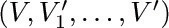, we could find the smallest k for which 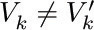; deleting the edge Vk−1 −− Vk would not disconnect the graph, since there would still be a path 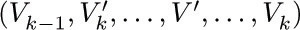 from Vk−1 to Vk that does not use the deleted edge.
(c) implies (a), for if G contains a cycle (V, V1, ..., V), there are two simple paths from V to V1.
To show that (d) and (e) are also equivalent to (a), (b), and (c), let us first prove an auxiliary result: If G is any finite graph that has no cycles and at least one edge, then there is at least one vertex that is adjacent to exactly one other vertex. This follows because we can find some vertex V1 and an adjacent vertex V2; for k ≥ 2 either Vk is adjacent to Vk−1 and no other, or it is adjacent to a vertex that we may call Vk+1 ≠ Vk−1 . Since there are no cycles, V1, V2, ..., Vk+1 must be distinct vertices, so this process must ultimately terminate.
Now assume that G is a free tree with n > 1 vertices, and let Vn be a vertex that is adjacent to only one other vertex, namely Vn−1 . If we delete Vn and the edge Vn −1 — Vn, the remaining graph G′ is a free tree, since Vn appears in no simple path of G except as the first or the last element. This argument proves (by induction on n) that G has n − 1 edges; hence (a) implies (d).
Assume that G satisfies (d) and let Vn, Vn −1, G′ be as in the preceding paragraph. Then the graph G is connected, since Vn is connected to Vn −1, which (by induction on n) is connected to all other vertices of G′. Thus (d) implies (e).
Finally assume that G satisfies (e). If G contains a cycle, we can delete any edge appearing in that cycle and G would still be connected. We can therefore continue deleting edges in this way until we obtain a connected graph G′ with n − 1 − k edges and no cycles. But since (a) implies (d), we must have k = 0, that is, G = G′.
The idea of a free tree can be applied directly to the analysis of computer algorithms. In Section 1.3.3, we discussed the application of Kirchhoff’s first law to the problem of counting the number of times each step of an algorithm is performed; we found that Kirchhoff’s law does not completely determine the number of times each step is executed, but it reduces the number of unknowns that must be specially interpreted. The theory of trees tells us how many independent unknowns will remain, and it gives us a systematic way to find them.
It is easier to understand the method that follows if an example is studied, so we will work an example as the theory is being developed. Figure 31 shows an abstracted flow chart for Program 1.3.3A, which was subjected to a “Kirchhoff’s law” analysis in Section 1.3.3. Each box in Fig. 31 represents part of the computation, and the letter or number inside the box denotes the number of times that computation will be performed during one run of the program, using the notation of Section 1.3.3. An arrow between boxes represents a possible jump in the program. The arrows have been labeled e1, e2, ..., e27 . Our goal is to find all relations between the quantities A, B, C, D, E, F, G, H, J, K, L, P, Q, R, and S that are implied by Kirchhoff’s law, and at the same time we hope to gain some insight into the general problem. (Note: Some simplifications have already been made in Fig. 31; for example, the box between C and E has been labeled “1”, and this in fact is a consequence of Kirchhoff’s law.)
Let Ej denote the number of times branch ej is taken during the execution of the program being studied; Kirchhoff’s law is
for example, in the case of the box marked K we have
In the discussion that follows, we will regard E1, E2, ..., E27 as the unknowns, instead of A, B, ..., S.
The flow chart in Fig. 31 may be abstracted further so that it becomes a graph G as in Fig. 32. The boxes have shrunk to vertices, and the arrows e1, e2, ... now represent edges of the graph. (A graph, strictly speaking, has no implied direction in its edges, and the direction of the arrows should be ignored when we refer to graph-theoretical properties of G. Our application to Kirchhoff’s law, however, makes use of the arrows, as we will see shortly.) For convenience an extra edge e0 has been drawn from the Stop vertex to the Start vertex, so that Kirchhoff’s law applies uniformly to all parts of the graph. Figure 32 also includes some other minor changes from Fig. 31: An extra vertex and edge have been added to divide e13 into two parts 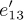 and 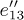, so that the basic definition of a graph (no two edges join the same two vertices) is valid; e19 has also been split up in this way. A similar modification would have been made if we had any vertex with an arrow leading back to itself.
Fig. 32. Graph corresponding to Fig. 31, including a free subtree.
Some of the edges in Fig. 32 have been drawn much heavier than the others. These edges form a free subtree of the graph, connecting all the vertices. It is always possible to find a free subtree of the graphs arising from flow charts, because the graphs must be connected and, by part (b) of Theorem A, if G is connected and not a free tree, we can delete some edge and still have the resulting graph connected; this process can be iterated until we reach a free subtree. Another algorithm for finding a free subtree appears in exercise 6. We can in fact always discard the edge e0 (which went from the Stop to the Start vertex) first; thus we may assume that e0 does not appear in the subtree chosen.
Let G′ be a free subtree of the graph G found in this way, and consider any edge V −− V′ of G that is not in G′. We may now note an important consequence of Theorem A: G′ plus this new edge V −− V′ contains a cycle; and in fact there is exactly one cycle, having the form (V, V′, ..., V), since there is a unique simple path from V′ to V in G′. For example, if G′ is the free subtree shown in Fig. 32, and if we add the edge e2, we obtain a cycle that goes along e2 and then (in the direction opposite to the arrows) along e4 and e3 . This cycle may be written algebraically as “e2 − e4 − e3”, using plus signs and minus signs to indicate whether the cycle goes in the direction of the arrows or not.
If we carry out this process for each edge not in the free subtree, we obtain the so-called fundamental cycles, which in the case of Fig. 32 are
Obviously an edge ej that is not in the free subtree will appear in only one of the fundamental cycles, namely Cj.
We are now approaching the climax of this construction. Each fundamental cycle represents a solution to Kirchhoff’s equations; for example, the solution corresponding to C2 is to let E2 = +1, E4 = −1, E3 = −1, and all other E’s = 0. It is clear that flow around a cycle in a graph always satisfies the condition (1) of Kirchhoff’s law. Moreover, Kirchhoff’s equations are “homogeneous,” so the sum or difference of solutions to (1) yields another solution. Therefore we may conclude that the values of E0, E2, E5, ..., E25 are independent in the following sense:
Such a solution is found by going x0 times around the cycle C0, x2 times around cycle C2, etc. Furthermore, we find that the values of the remaining variables E1, E3, E4, ... are completely dependent on the values E0, E2, ..., E25:
For if there are two solutions to Kirchhoff’s equations such that E0 = x0, ..., E25 = x25, we can subtract one from the other and we thereby obtain a solution in which E0 = E2 = E5 = · · · = E25 = 0. But now all Ej must be zero, for it is easy to see that a nonzero solution to Kirchhoff’s equations is impossible when the graph is a free tree (see exercise 4). Therefore the two assumed solutions must be identical. We have now proved that all solutions of Kirchhoff’s equations may be obtained as sums of multiples of the fundamental cycles.
When these remarks are applied to the graph in Fig. 32, we obtain the following general solution of Kirchhoff’s equations in terms of the independent variables E0, E2, ..., E25:
To obtain these equations, we merely list, for each edge ej in the subtree, all Ek for which ej appears in cycle Ck, with the appropriate sign. [Thus, the matrix of coefficients in (6) is just the transpose of the matrix of coefficients in (3).]
Strictly speaking, C0 should not be called a fundamental cycle, since it involves the special edge e0. We may call C0 minus the edge e0 a fundamental path from Start to Stop. Our boundary condition, that the Start and Stop boxes in the flow chart are performed exactly once, is equivalent to the relation
The preceding discussion shows how to obtain all solutions to Kirchhoff’s law; the same method may be applied (as Kirchhoff himself applied it) to electrical circuits instead of program flow charts. It is natural to ask at this point whether Kirchhoff’s law is the strongest possible set of equations that can be given for the case of program flow charts, or whether more can be said: Any execution of a computer program that goes from Start to Stop gives us a set of values E1, E2, ..., E27 for the number of times each edge is traversed, and these values obey Kirchhoff’s law; but are there solutions to Kirchhoff’s equations that do not correspond to any computer program execution? (In this question, we do not assume that we know anything about the given computer program, except its flow chart.) If there are solutions that meet Kirchhoff’s conditions but do not correspond to actual program execution, we can give stronger conditions than Kirchhoff’s law. For the case of electrical circuits Kirchhoff himself gave a second law [Ann. Physik und Chemie 64 (1845), 497–514]: The sum of the voltage drops around a fundamental cycle must be zero. This second law does not apply to our problem.
There is indeed an obvious further condition that the E’s must satisfy, if they are to correspond to some actual walk in the flow chart from Start to Stop; they must be integers, and in fact they must be nonnegative integers. This is not a trivial condition, since we cannot simply assign any arbitrary nonnegative integer values to the independent variables E2, E5, ..., E25; for example, if we take E2 = 2 and E8 = 0, we find from (6) and (7) that E3 = −1. (Thus, no execution of the flow chart in Fig. 31 will take branch e2 twice without taking branch e8 at least once.) The condition that all the E’s be nonnegative integers is not enough either; for example, consider the solution in which 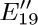 = 1, E2 = E5 = · · · = E17 = E20 = E21 = E25 = 0; there is no way to get to e18 except via e15. The following condition is a necessary and sufficient condition that answers the problem raised in the previous paragraph: Let E2, E5, ..., E25 be any given values, and determine E1, E3, ..., E27 according to (6), (7). Assume that all the E’s are nonnegative integers, and assume that the graph whose edges are those ej for which Ej > 0, and whose vertices are those that touch such ej, is connected. Then there is a walk from Start to Stop in which edge ej is traversed exactly Ej times. This fact is proved in the next section (see exercise 2.3.4.2–24).
Let us now summarize the preceding discussion:
Theorem K. If a flow chart (such as Fig. 31) contains n boxes (including Start and Stop) and m arrows, it is possible to find m − n + 1 fundamental cycles and a fundamental path from Start to Stop, such that any walk from Start to Stop is equivalent (in terms of the number of times each edge is traversed) to one traversal of the fundamental path plus a uniquely determined number of traversals of each of the fundamental cycles. (The fundamental path and fundamental cycles may include some edges that are to be traversed in a direction opposite that shown by the arrow on the edge; we conventionally say that such edges are being traversed −1 times.)
Conversely, for any traversal of the fundamental path and the fundamental cycles in which the total number of times each edge is traversed is nonnegative, and in which the vertices and edges corresponding to a positive number of traversals form a connected graph, there is at least one equivalent walk from Start to Stop.
The fundamental cycles are found by picking a free subtree as in Fig. 32; if we choose a different subtree we get, in general, a different set of fundamental cycles. The fact that there are m − n + 1 fundamental cycles follows from Theorem A. The modifications we made to get from Fig. 31 to Fig. 32, after adding e0, do not change the value of m − n + 1, although they may increase both m and n; the construction could have been generalized so as to avoid these trivial modifications entirely (see exercise 9).
Theorem K is encouraging because it says that Kirchhoff’s law (which consists of n equations in the m unknowns E1, E2, ..., Em) has just one “redundancy”: These n equations allow us to eliminate n − 1 unknowns. However, the unknown variables throughout this discussion have been the number of times the edges have been traversed, not the number of times each box of the flow chart has been entered. Exercise 8 shows how to construct another graph whose edges correspond to the boxes of the flow chart, so that the theory above can be used to deduce the true number of redundancies between the variables of interest.
Applications of Theorem K to software for measuring the performance of programs in high-level languages are discussed by Thomas Ball and James R. Larus in ACM Trans. Prog. Languages and Systems 16 (1994), 1319–1360.
Exercises
1. [14] List all cycles from B to B that are present in the graph of Fig. 29.
2. [M20] Prove that if V and V′ are vertices of a graph and if there is a walk from V to V′, then there is a (simple) path from V to V′.
3. [15] What walk from Start to Stop is equivalent (in the sense of Theorem K) to one traversal of the fundamental path plus one traversal of cycle C2 in Fig. 32?
 4. [M20] Let G′ be a finite free tree in which arrows have been drawn on its edges e1, ..., en−1; let E1, ..., En−1 be numbers satisfying Kirchhoff’s law (1) in G′. Show that E1 = · · · = En−1 = 0.
4. [M20] Let G′ be a finite free tree in which arrows have been drawn on its edges e1, ..., en−1; let E1, ..., En−1 be numbers satisfying Kirchhoff’s law (1) in G′. Show that E1 = · · · = En−1 = 0.
5. [20] Using Eqs. (6), express the quantities A, B, ..., S that appear inside the boxes of Fig. 31 in terms of the independent variables E2, E5, ..., E25.
 6. [M27] Suppose a graph has n vertices V1, ..., Vn and m edges e1, ..., em . Each edge e is represented by a pair of integers (a, b) if it joins Va to Vb . Design an algorithm that takes the input pairs (a1, b1), ..., (am, bm) and prints out a subset of edges that forms a free tree; the algorithm reports failure if this is impossible. Strive for an efficient algorithm.
6. [M27] Suppose a graph has n vertices V1, ..., Vn and m edges e1, ..., em . Each edge e is represented by a pair of integers (a, b) if it joins Va to Vb . Design an algorithm that takes the input pairs (a1, b1), ..., (am, bm) and prints out a subset of edges that forms a free tree; the algorithm reports failure if this is impossible. Strive for an efficient algorithm.
7. [22] Carry out the construction in the text for the flow chart
using the free subtree consisting of edges e1, e2, e3, e4, e9 . What are the fundamental cycles? Express E1, E2, E3, E4, E9 in terms of E5, E6, E7, and E8.
 8. [M25] When applying Kirchhoff’s first law to program flow charts, we usually are interested only in the vertex flows (the number of times each box of the flow chart is performed), not the edge flows analyzed in the text. For example, in the graph of exercise 7, the vertex flows are A = E2 + E4, B = E5, C = E3 + E7 + E8, D = E6 + E9.
8. [M25] When applying Kirchhoff’s first law to program flow charts, we usually are interested only in the vertex flows (the number of times each box of the flow chart is performed), not the edge flows analyzed in the text. For example, in the graph of exercise 7, the vertex flows are A = E2 + E4, B = E5, C = E3 + E7 + E8, D = E6 + E9.
If we group some vertices together, treating them as one “supervertex,” we can combine edge flows that correspond to the same vertex flow. For example, edges e2 and e4 can be combined in the flow chart above if we also put B with D:
(Here e0 has also been added from Stop to Start, as in the text.) Continuing this procedure, we can combine e3 + e7, then (e3 + e7) + e8, then e6 + e9, until we obtain the reduced flow chart having edges s = e1, a = e2 + e4, b = e5, c = e3 + e7 + e8, d = e6 + e9, t = e0, precisely one edge for each vertex in the original flow chart:
By construction, Kirchhoff’s law holds in this reduced flow chart. The new edge flows are the vertex flows of the original; hence the analysis in the text, applied to the reduced flow chart, shows how the original vertex flows depend on each other.
Prove that this reduction process can be reversed, in the sense that any set of flows {a, b, ...} satisfying Kirchhoff’s law in the reduced flow chart can be “split up” into a set of edge flows {e0, e1, ...} in the original flow chart. These flows ej satisfy Kirchhoff’s law and combine to yield the given flows {a, b, ...}; some of them might, however, be negative. (Although the reduction procedure has been illustrated here for only one particular flow chart, your proof should be valid in general.)
9. [M22] Edges e13 and e19 were split into two parts in Fig. 32, since a graph is not supposed to have two edges joining the same two vertices. However, if we look at the final result of the construction, this splitting into two parts seems quite artificial since 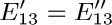 and 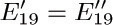 are two of the relations found in (6), while 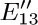 and are two of the independent variables. Explain how the construction could be generalized so that an artificial splitting of edges may be avoided.
10. [16] An electrical engineer, designing the circuitry for a computer, has n terminals T1, T2, ..., Tn that should be at essentially the same voltage at all times. To achieve this, the engineer can solder wires between any pairs of terminals; the idea is to make enough wire connections so that there is a path through the wires from any terminal to any other. Show that the minimum number of wires needed to connect all the terminals is n − 1, and n − 1 wires achieve the desired connection if and only if they form a free tree (with terminals and wires standing for vertices and edges).
11. [M27] (R. C. Prim, Bell System Tech. J. 36 (1957), 1389–1401.) Consider the wire connection problem of exercise 10 with the additional proviso that a cost c(i, j) is given for each i < j, denoting the expense of wiring terminal Ti to terminal Tj . Show that the following algorithm gives a connection tree of minimum cost: “If n = 1, do nothing. Otherwise, renumber terminals {1, ..., n − 1} and the associated costs so that c(n − 1, n) = min1 ≤ i<nc(i, n); connect terminal Tn − 1 to Tn; then change c(j, n − 1) to min(c(j, n − 1), c(j, n)) for 1 ≤ j < n − 1, and repeat the algorithm for n − 1 terminals T1, ..., Tn − 1 using these new costs. (The algorithm is to be repeated with the understanding that whenever a connection is subsequently requested between the terminals now called Tj and Tn − 1, the connection is actually made between terminals now called Tj and Tn if it is cheaper; thus Tn − 1 and Tn are being regarded as though they were one terminal in the remainder of the algorithm.)” This algorithm may also be stated as follows: “Choose a particular terminal to start with; then repeatedly make the cheapest possible connection from an unchosen terminal to a chosen one, until all have been chosen.”
For example, consider Fig. 33(a), which shows nine terminals on a grid; let the cost of connecting two terminals be the wire length, namely the distance between them. (The reader may wish to try to find a minimal cost tree by hand, using intuition instead of the suggested algorithm.) The algorithm would first connect T8 to T9, then T6 to T8, T5 to T6, T2 to T6, T1 to T2, T3 to T1, T7 to T3, and finally T4 to either T2 or T6 . A minimum cost tree (wire length 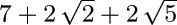) is shown in Fig. 33(b).
Fig. 33. Free tree of minimum cost. (See exercise 11.)
 12. [29] The algorithm of exercise 11 is not stated in a fashion suitable for direct computer implementation. Reformulate that algorithm, specifying in more detail the operations that are to be done, in such a way that a computer program can carry out the process with reasonable efficiency.
12. [29] The algorithm of exercise 11 is not stated in a fashion suitable for direct computer implementation. Reformulate that algorithm, specifying in more detail the operations that are to be done, in such a way that a computer program can carry out the process with reasonable efficiency.
13. [M24] Consider a graph with n vertices and m edges, in the notation of exercise 6. Show that it is possible to write any permutation of the integers {1, 2, ..., n} as a product of transpositions (ak1bk1) (ak2bk2) ... (aktbkt) if and only if the graph is connected. (Hence there are sets of n − 1 transpositions that generate all permutations on n elements, but no set of n − 2 will do so.)
In the previous section, we saw that an abstracted flow chart may be regarded as a graph, if we ignore the direction of the arrows on its edges; the graph-theoretic ideas of cycle, free subtree, etc., were shown to be relevant in the study of flow charts. There is a good deal more that can be said when the direction of each edge is given more significance, and in this case we have what is called a “directed graph” or “digraph.”
Let us define a directed graph formally as a set of vertices and a set of arcs, each arc leading from a vertex V to a vertex V′. If e is an arc from V to V′ we say V is the initial vertex of e, and V′ is the final vertex, and we write V = init(e), V′ = fin(e). The case that init(e) = fin(e) is not excluded (although it was excluded from the definition of edge in an ordinary graph), and several different arcs may have the same initial and final vertices. The out-degree of a vertex V is the number of arcs leading out from it, namely the number of arcs e such that init(e) = V; similarly, the in-degree of V is defined to be the number of arcs with fin(e) = V.
The concepts of paths and cycles are defined for directed graphs in a manner similar to the corresponding definitions for ordinary graphs, but some important new technicalities must be considered. If e1, e2, ..., en are arcs (with n ≥ 1), we say that (e1, e2, ..., en) is an oriented walk of length n from V to V′ if V = init(e1), V′ = fin(en), and fin(ek) = init(ek+1) for 1 ≤ k < n. An oriented walk (e1, e2, ..., en) is called simple if init(e1), ..., init(en) are distinct and fin(e1), ..., fin(en) are distinct; such a walk is an oriented cycle if fin(en) = init(e1), otherwise it’s an oriented path. (An oriented cycle can have length 1 or 2, but such short cycles were excluded from our definition of “cycle” in the previous section. Can the reader see why this makes sense?)
As examples of these straightforward definitions, we may refer to Fig. 31 in the previous section. The box labeled “J” is a vertex with in-degree 2 (because of the arcs e16, e21) and out-degree 1. The sequence (e17, e19, e18, e22) is an oriented walk of length 4 from J to P; this walk is not simple since, for example, init(e19) = L = init(e22). The diagram contains no oriented cycles of length 1, but (e18, e19) is an oriented cycle of length 2.
A directed graph is said to be strongly connected if there is an oriented path from V to V′ for any two vertices V ≠ V′. It is said to be rooted if there is at least one root, that is, at least one vertex R such that there is an oriented path from V to R for all V ≠ R. “Strongly connected” always implies “rooted,” but the converse does not hold. A flow chart such as Fig. 31 in the previous section is an example of a rooted digraph, with R the Stop vertex; with the additional arc from Stop to Start (Fig. 32) it becomes strongly connected.
Every directed graph G corresponds in an obvious manner to an ordinary graph G0, if we ignore orientations and discard duplicate edges or loops. Formally speaking, G0 has an edge from V to V′ if and only if V ≠ V′ and G has an arc from V to V′ or from V′ to V . We can speak of (unoriented) paths and cycles in G with the understanding that these are paths and cycles of G0; we can say that G is connected — this is a much weaker property than “strongly connected,” even weaker than “rooted” — if the corresponding graph G0 is connected.
An oriented tree (see Fig. 34), sometimes called a “rooted tree” by other authors, is a directed graph with a specified vertex R such that:
a) Each vertex V ≠ R is the initial vertex of exactly one arc, denoted by e[V].
b) R is the initial vertex of no arc;
c) R is a root in the sense defined above (that is, for each vertex V ≠ R there is a unique oriented path from V to R).
It follows immediately that for each vertex V ≠ R there is a unique oriented path from V to R; and hence there are no oriented cycles.
Our previous definition of “oriented tree” (at the beginning of Section 2.3) is easily seen to be compatible with the new definition just given, when there are finitely many vertices. The vertices correspond to nodes, and the arc e[V] is the link from V to PARENT[V].
The (undirected) graph corresponding to an oriented tree is connected, because of property (c). Furthermore, it has no cycles. For if (V0, V1, ..., Vn) is an undirected cycle with n ≥ 3, and if the edge between V0 and V1 is e[V1 ], then the edge between V1 and V2 must be e[V2 ], and similarly the edge between Vk − 1 and Vk must be e[Vk] for 1 ≤ k ≤ n, contradicting the absence of oriented cycles. If the edge between V0 and V1 is not e[V1], it must be e[V0 ], and the same argument applies to the cycle
(V1, V0, Vn − 1, ..., V1),
because Vn = V0 . Therefore an oriented tree is a free tree when the direction of the arcs is neglected.
Conversely, it is important to note that we can reverse the process just described. If we start with any nonempty free tree, such as that in Fig. 30, we can choose any vertex as the root R, and assign directions to the edges. The intuitive idea is to “pick up” the graph at vertex R and shake it; then assign upward-pointing arrows. More formally, the rule is this:
Change the edge V −− V′ to an arc from V to V′ if and only if the simple path from V to R leads through V′, that is, if it has the form (V0, V1, ..., Vn), where n > 0, V0 = V, V1 = V′, Vn = R.
To verify that such a construction is valid, we need to prove that each edge V −− V′ is assigned the direction V ← V′ or the direction V → V′; and this is easy to prove, for if (V, V1, ..., R) and (V′, 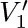, ..., R) are simple paths, there is a cycle unless V = or V1 = V′. This construction demonstrates that the directions of the arcs in an oriented tree are completely determined if we know which vertex is the root, so they need not be shown in diagrams when the root is explicitly indicated.
We now see the relation between three types of trees: the (ordered) tree, which is of principal importance in computer programs, as defined at the beginning of Section 2.3; the oriented tree (or unordered tree); and the free tree. Both of the latter two types arise in the study of computer algorithms, but not as often as the first type. The essential distinction between these types of tree structure is merely the amount of information that is taken to be relevant. For example, Fig. 35 shows three trees that are distinct if they are considered as ordered trees (with root at the top). As oriented trees, the first and second are identical, since the left-to-right order of subtrees is immaterial; as free trees, all three graphs in Fig. 35 are identical, since the root is immaterial.
An Eulerian trail in a directed graph is an oriented walk (e1, e2, ..., em) such that every arc in the directed graph occurs exactly once, and fin(em) = init(e1). This is a “complete traversal” of the arcs of the digraph. (Eulerian trails get their name from Leonhard Euler’s famous discussion in 1736 of the impossibility of traversing each of the seven bridges in the city of Königsberg exactly once during a Sunday stroll. He treated the analogous problem for undirected graphs. Eulerian trails should be distinguished from “Hamiltonian cycles,” which are oriented cycles that encounter each vertex exactly once; see Chapter 7.)
A directed graph is said to be balanced (see Fig. 36) if every vertex V has the same in-degree as its out-degree, that is, if there are just as many edges with V as their initial vertex as there are with V as their final vertex. This condition is closely related to Kirchhoff’s law (see exercise 24). If a directed graph has an Eulerian trail, it must obviously be connected and balanced — unless it has isolated vertices, which are vertices with in-degree and out-degree both equal to zero.
So far in this section we’ve looked at quite a few definitions (directed graph, arc, initial vertex, final vertex, out-degree, in-degree, oriented walk, oriented path, oriented cycle, oriented tree, Eulerian trail, isolated vertex, and the properties of being strongly connected, rooted, and balanced), but there has been a scarcity of important results connecting these concepts. Now we are ready for meatier material. The first basic result is a theorem due to I. J. Good [J. London Math. Soc. 21 (1947), 167–169], who showed that Eulerian trails are always possible unless they are obviously impossible:
Theorem G. A finite, directed graph with no isolated vertices possesses an Eulerian trail if and only if it is connected and balanced.
Proof. Assume that G is balanced, and let
P = (e1, ..., em)
be an oriented walk of longest possible length that uses no arc twice. Then if V = fin(em), and if k is the out-degree of V, all k arcs e with init(e) = V must already appear in P; otherwise we could add e and get a longer walk. But if init(ej) = V and j > 1, then fin(ej−1) = V. Hence, since G is balanced, we must have
init(e1) = V = fin(em),
otherwise the in-degree of V would be at least k + 1.
Now by the cyclic permutation of P it follows that any arc e not in the walk has neither initial nor final vertex in common with any arc in the walk. So if P is not an Eulerian trail, G is not connected.
There is an important connection between Eulerian trails and oriented trees:
Lemma E. Let (e1, ..., em) be an Eulerian trail of a directed graph G having no isolated vertices. Let R = fin(em) = init(e1). For each vertex V ≠ R let e[V] be the last exit from V in the trail; that is,
Then the vertices of G with the arcs e[V] form an oriented tree with root R .
Proof. Properties (a) and (b) of the definition of oriented tree are evidently satisfied. By exercise 7 we need only show that there are no oriented cycles among the e[V ]; but this is immediate, since if fin(e[V ]) = V ′ = init(e[V ′]), where e[V] = ej and e[V ′] = ej′, then j < j ′.
This lemma can perhaps be better understood if we turn things around and consider the “first entrances” to each vertex; the first entrances form an unordered tree with all arcs pointing away from R. Lemma E has a surprising and important converse, proved by T. van Aardenne-Ehrenfest and N. G. de Bruijn [Simon Stevin 28 (1951), 203–217]:
Theorem D. Let G be a finite, balanced, directed graph, and let G′ be an oriented tree consisting of the vertices of G plus some of the arcs of G . Let R be the root of G ′ and let e[V ]be the arc of G′ with initial vertex V . Let e1be any arc of G with init(e1) = R . Then P = (e1, e2, ..., em) is an Eulerian trail if it is an oriented walk for which
i) no arc is used more than once; that is, ej≠ ekwhen j ≠ k.
ii) e[V] is not used in P unless it is the only choice consistent with rule (i); that is, if ej = e[V] and if e is an arc with init(e) = V, then e = ekfor some k ≤ j.
iii) P terminates only when it cannot be continued by rule (i); that is, if init(e) = fin(em), then e = ekfor some k .
Proof. By (iii) and the argument in the proof of Theorem G, we must have fin(em) = init(e1) = R. Now if e is an arc not appearing in P, let V = fin(e). Since G is balanced, it follows that V is the initial vertex of some arc not in P; and if V ≠ R, condition (ii) tells us that e[V] is not in P . Now use the same argument with e = e[V], and we ultimately find that R is the initial vertex of some arc not in the walk, contradicting (iii).
The essence of Theorem D is that it shows us a simple way to construct an Eulerian trail in a balanced directed graph, given any oriented subtree of the graph. (See the example in exercise 14.) In fact, Theorem D allows us to count the exact number of Eulerian trails in a directed graph; this result and many other important consequences of the ideas developed in this section appear in the exercises that follow.
Exercises
1. [M20] Prove that if V and V′ are vertices of a directed graph and if there is an oriented walk from V to V′, then there is a simple oriented path from V to V′.
2. [15] Which of the ten “fundamental cycles” listed in (3) of Section 2.3.4.1 are oriented cycles in the directed graph (Fig. 32) of that section?
3. [16] Draw the diagram for a directed graph that is connected but not rooted.
 4. [M20] The concept of topological sorting can be defined for any finite directed graph G as a linear arrangement of the vertices V1V2... Vn such that init(e) precedes fin(e) in the ordering for all arcs e of G. (See Section 2.2.3, Figs. 6 and 7.) Not all finite directed graphs can be topologically sorted; which ones can be? (Use the terminology of this section to give the answer.)
4. [M20] The concept of topological sorting can be defined for any finite directed graph G as a linear arrangement of the vertices V1V2... Vn such that init(e) precedes fin(e) in the ordering for all arcs e of G. (See Section 2.2.3, Figs. 6 and 7.) Not all finite directed graphs can be topologically sorted; which ones can be? (Use the terminology of this section to give the answer.)
5. [M16] Let G be a directed graph that contains an oriented walk (e1, ..., en) with fin(en) = init(e1). Give a proof that G is not an oriented tree, using the terminology defined in this section.
6. [M21] True or false: A directed graph that is rooted and contains no cycles and no oriented cycles is an oriented tree.
 7. [M22] True or false: A directed graph satisfying properties (a) and (b) of the definition of oriented tree, and having no oriented cycles, is an oriented tree.
7. [M22] True or false: A directed graph satisfying properties (a) and (b) of the definition of oriented tree, and having no oriented cycles, is an oriented tree.
8. [HM40] Study the properties of automorphism groups of oriented trees, namely the groups consisting of all permutations π of the vertices and arcs for which we have init(eπ) = init(e)π, fin(eπ) = fin(e)π.
9. [18] By assigning directions to the edges, draw the oriented tree corresponding to the free tree in Fig. 30 on page 363, with G as the root.
10. [22] An oriented tree with vertices V1, ..., Vn can be represented inside a computer by using a table P [1], ..., P [n] as follows: If Vj is the root, P [j] = 0; otherwise P [j] = k, if the arc e[Vj] goes from Vj to Vk. (Thus P [1], ..., P [n] is the same as the “parent” table used in Algorithm 2.3.3E.)
The text shows how a free tree can be converted into an oriented tree by choosing any desired vertex to be the root. Consequently, it is possible to start with an oriented tree that has root R, then to convert this into a free tree by neglecting the orientation of the arcs, and finally to assign new orientations, obtaining an oriented tree with any specified vertex as the root. Design an algorithm that performs this transformation: Starting with a table P [1], ..., P [n], representing an oriented tree, and given an integer j, 1 ≤ j ≤ n, design the algorithm to transform the P table so that it represents the same free tree but with Vj as the root.
 11. [28] Using the assumptions of exercise 2.3.4.1–6, but with (ak, bk) representing an arc from Vak to Vbk, design an algorithm that not only prints out a free subtree as in that algorithm, but also prints out the fundamental cycles. [Hint: The algorithm given in the solution to exercise 2.3.4.1–6 can be combined with the algorithm in the preceding exercise.]
11. [28] Using the assumptions of exercise 2.3.4.1–6, but with (ak, bk) representing an arc from Vak to Vbk, design an algorithm that not only prints out a free subtree as in that algorithm, but also prints out the fundamental cycles. [Hint: The algorithm given in the solution to exercise 2.3.4.1–6 can be combined with the algorithm in the preceding exercise.]
12. [M10] In the correspondence between oriented trees as defined here and oriented trees as defined at the beginning of Section 2.3, is the degree of a tree node equal to the in-degree or the out-degree of the corresponding vertex?
 13. [M24] Prove that if R is a root of a (possibly infinite) directed graph G, then G contains an oriented subtree with the same vertices as G and with root R. (As a consequence, it is always possible to choose the free subtree in flow charts like Fig. 32 of Section 2.3.4.1 so that it is actually an oriented subtree; this would be the case in that diagram if we had selected 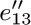, 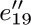, e20, and e17 instead of 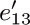, 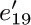, e23, and e15.)
13. [M24] Prove that if R is a root of a (possibly infinite) directed graph G, then G contains an oriented subtree with the same vertices as G and with root R. (As a consequence, it is always possible to choose the free subtree in flow charts like Fig. 32 of Section 2.3.4.1 so that it is actually an oriented subtree; this would be the case in that diagram if we had selected 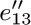, 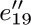, e20, and e17 instead of 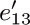, 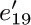, e23, and e15.)
14. [21] Let G be the balanced digraph shown in Fig. 36, and let G′ be the oriented subtree with vertices V0, V1, V2 and arcs e01, e21. Find all oriented walks P that meet the conditions of Theorem D, starting with arc e12.
15. [M20] True or false: A directed graph that is connected and balanced is strongly connected.
 16. [M24] In a popular solitaire game called “clock,” the 52 cards of an ordinary deck of playing cards are dealt face down into 13 piles of four each; 12 piles are arranged in a circle like the 12 hours of a clock and the thirteenth pile goes in the center. The solitaire game now proceeds by turning up the top card of the center pile, and then if its face value is k, by placing it next to the kth pile. (The numbers 1, 2, ..., 13 are equivalent to A, 2, ..., 10, J, Q, K.) Play continues by turning up the top card of the kth pile and putting it next to its pile, etc., until we reach a point where we cannot continue since there are no more cards to turn up on the designated pile. (The player has no choice in the game, since the rules completely specify what to do.) The game is won if all cards are face up when play terminates. [Reference: E. D. Cheney,Patience (Boston: Lee & Shepard, 1870), 62–65; the game was called “Travellers’ Patience” in England, according to M. Whitmore Jones,Games of Patience (London: L. Upcott Gill, 1900), Chapter 7.]
16. [M24] In a popular solitaire game called “clock,” the 52 cards of an ordinary deck of playing cards are dealt face down into 13 piles of four each; 12 piles are arranged in a circle like the 12 hours of a clock and the thirteenth pile goes in the center. The solitaire game now proceeds by turning up the top card of the center pile, and then if its face value is k, by placing it next to the kth pile. (The numbers 1, 2, ..., 13 are equivalent to A, 2, ..., 10, J, Q, K.) Play continues by turning up the top card of the kth pile and putting it next to its pile, etc., until we reach a point where we cannot continue since there are no more cards to turn up on the designated pile. (The player has no choice in the game, since the rules completely specify what to do.) The game is won if all cards are face up when play terminates. [Reference: E. D. Cheney,Patience (Boston: Lee & Shepard, 1870), 62–65; the game was called “Travellers’ Patience” in England, according to M. Whitmore Jones,Games of Patience (London: L. Upcott Gill, 1900), Chapter 7.]
Show that the game will be won if and only if the following directed graph is an oriented tree: The vertices are V1, V2, ..., V13; the arcs are e1, e2, ..., e12, where ej goes from Vj to Vk if k is the bottom card in pile j after the deal.
(In particular, if the bottom card of pile j is a “j”, for j ≠ 13, it is easy to see that the game is certainly lost, since this card could never be turned up. The result proved in this exercise gives a much faster way to play the game!)
17. [M32] What is the probability of winning the solitaire game of clock (described in exercise 16), assuming the deck is randomly shuffled? What is the probability that exactly k cards are still face down when the game is over?
18. [M30] Let G be a graph with n + 1 vertices V0, V1, ..., Vn and m edges e1, ..., em. Make G into a directed graph by assigning an arbitrary orientation to each edge; then construct the m × (n + 1) matrix A with
Let A0 be the m × n matrix A with column 0 deleted.
a) If m = n, show that the determinant of A0 is equal to 0 if G is not a free tree, and equal to ±1 if G is a free tree.
b) Show that for general m the determinant of 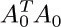 is the number of free subtrees of G (namely the number of ways to choose n of the m edges so that the resulting graph is a free tree). [Hint: Use (a) and the result of exercise 1.2.3–46.]
19. [M31] (The matrix tree theorem.) Let G be a directed graph with n + 1 vertices V0, V1, ..., Vn. Let A be the (n + 1) × (n + 1) matrix with
(It follows that ai 0 + ai 1 + · · · + ain = 0 for 0 ≤ i ≤ n.) Let A0 be the same matrix with row 0 and column 0 deleted. For example, if G is the directed graph of Fig. 36, we have
a) Show that if a00 = 0 and ajj = 1 for 1 ≤ j ≤ n, and if G contains no arcs from a vertex to itself, then det A0 = [G is an oriented tree with root V0].
b) Show that in general, det A0 is the number of oriented subtrees of G rooted at V0(namely the number of ways to select n of the arcs of G so that the resulting directed graph is an oriented tree, with V0 as the root). [Hint: Use induction on the number of arcs.]
20. [M21] If G is an undirected graph on n + 1 vertices V0, ..., Vn, let B be the n × n matrix defined as follows for 1 ≤ i, j ≤ n:
For example, if G is the graph of Fig. 29 on page 363, with (V0, V1, V2, V3, V4) = (A, B, C, D, E), we find that

Show that the number of free subtrees of G is det B. [Hint: Use exercise 18 or 19.]
21. [HM38] (T. van Aardenne-Ehrenfest and N. G. de Bruijn.) Figure 36 is an example of a directed graph that is not only balanced, it is regular, which means that every vertex has the same in-degree and out-degree as every other vertex. Let G be a regular digraph with n vertices V0, V1, ..., Vn−1, in which every vertex has in-degree and out-degree equal to m. (Hence there are mn arcs in all.) Let G* be the digraph with mn vertices corresponding to the arcs of G; let a vertex of G* corresponding to an arc from Vj to Vk in G be denoted by Vjk. An arc goes from Vjk to Vj′ k′ in G* if and only if k = j′. For example, if G is the directed graph of Fig. 36, G* is shown in Fig. 37. An Eulerian trail in G is a Hamiltonian cycle in G* and conversely.
Fig. 37. Arc digraph corresponding to Fig. 36. (See exercise 21.)
Prove that the number of oriented subtrees of G* is m(m −1)n times the number of oriented subtrees of G. [Hint: Use exercise 19.]
 22. [M26] Let G be a balanced, directed graph with vertices V1, V2, ..., Vn and no isolated vertices. Let σj be the out-degree of Vj. Show that the number of Eulerian trails of G is
22. [M26] Let G be a balanced, directed graph with vertices V1, V2, ..., Vn and no isolated vertices. Let σj be the out-degree of Vj. Show that the number of Eulerian trails of G is
where T is the number of oriented subtrees of G with root V1. [Note: The factor (σ1 + · · · + σn), which is the number of arcs of G, may be omitted if the Eulerian trail (e1, ..., em) is regarded as equal to (ek, ..., em, e1, ..., ek−1).]
 23. [M33] (N. G. de Bruijn.) For each sequence of nonnegative integers x1, ..., xk less than m, let f(x1, ..., xk) be a nonnegative integer less than m. Define an infinite sequence as follows: X1 = X2 = · · · = Xk = 0; Xn + k +1 = f(Xn + k, ..., Xn +1) when n ≥ 0. For how many of the mmk possible functions f is this sequence periodic with a period of the maximum length mk? [Hint: Construct a directed graph with vertices (x1, ..., xk−1) for all 0 ≤ xj< m, and with arcs from (x1, x2, ..., xk−1) to (x2, ..., xk−1, xk); apply exercises 21 and 22.]
23. [M33] (N. G. de Bruijn.) For each sequence of nonnegative integers x1, ..., xk less than m, let f(x1, ..., xk) be a nonnegative integer less than m. Define an infinite sequence as follows: X1 = X2 = · · · = Xk = 0; Xn + k +1 = f(Xn + k, ..., Xn +1) when n ≥ 0. For how many of the mmk possible functions f is this sequence periodic with a period of the maximum length mk? [Hint: Construct a directed graph with vertices (x1, ..., xk−1) for all 0 ≤ xj< m, and with arcs from (x1, x2, ..., xk−1) to (x2, ..., xk−1, xk); apply exercises 21 and 22.]
 24. [M20] Let G be a connected digraph with arcs e0, e1, ..., em. Let E0, E1, ..., Em be a set of positive integers that satisfy Kirchhoff’s law for G; that is, for each vertex V,
24. [M20] Let G be a connected digraph with arcs e0, e1, ..., em. Let E0, E1, ..., Em be a set of positive integers that satisfy Kirchhoff’s law for G; that is, for each vertex V,
Assume further that E0 = 1. Prove that there is an oriented walk in G from fin(e0) to init(e0) such that edge ej appears exactly Ej times, for 1 ≤ j ≤ m, while edge e0 does not appear. [Hint: Apply Theorem G to a suitable directed graph.]
25. [26] Design a computer representation for directed graphs that generalizes the right-threaded binary tree representation of a tree. Use two link fields ALINK, BLINK and two one-bit fields ATAG, BTAG; and design the representation so that: (i) there is one node for each arc of the directed graph (not for each vertex); (ii) if the directed graph is an oriented tree with root R, and if we add an arc from R to a new vertex H, then the representation of this directed graph is essentially the same as a right-threaded representation of this oriented tree (with some order imposed on the children in each family), in the sense that ALINK, BLINK, BTAG are respectively the same as LLINK, RLINK, RTAG in Section 2.3.2; and (iii) the representation is symmetric in the sense that interchanging ALINK, ATAG, with BLINK, BTAG is equivalent to changing the direction on all the arcs of the directed graph.
 26. [HM39] (Analysis of a random algorithm.) Let G be a directed graph on the vertices V1, V2, ..., Vn. Assume that G represents the flow chart for an algorithm, where V1 is the Start vertex and Vn is the Stop vertex. (Therefore Vn is a root of G.) Suppose each arc e of G has been assigned a probability p(e), where the probabilities satisfy the conditions
26. [HM39] (Analysis of a random algorithm.) Let G be a directed graph on the vertices V1, V2, ..., Vn. Assume that G represents the flow chart for an algorithm, where V1 is the Start vertex and Vn is the Stop vertex. (Therefore Vn is a root of G.) Suppose each arc e of G has been assigned a probability p(e), where the probabilities satisfy the conditions
Consider a random walk, which starts at V1 and subsequently chooses branch e of G with probability p(e), until Vn is reached; the choice of branch taken at each step is to be independent of all previous choices.
For example, consider the graph of exercise 2.3.4.1–7, and assign the respective probabilities 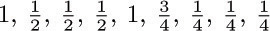 to arcs e1, e2, ..., e9. Then the walk “Start–A– B–C–A–D–B–C–Stop” is chosen with probability .
Such random walks are called Markov chains, after the Russian mathematician Andrei A. Markov, who first made extensive studies of stochastic processes of this kind. The situation serves as a model for certain algorithms, although our requirement that each choice must be independent of the others is a very strong assumption. The purpose of this exercise is to analyze the computation time for algorithms of this kind.
The analysis is facilitated by considering the n × n matrix A = (aij), where aij = ∑p(e) summed over all arcs e that go from Vi to Vj. If there is no such arc, aij = 0. The matrix A for the example considered above is

It follows easily that (Ak)ij is the probability that a walk starting at Vi will be at Vj after k steps.
Prove the following facts, for an arbitrary directed graph G of the stated type:
a) The matrix (I − A) is nonsingular. [Hint: Show that there is no nonzero vector x with xAn = x.]
b) The average number of times that vertex Vj appears in the walk is
[Thus in the example considered we find that the vertices A, B, C, D are traversed respectively times, on the average.]
c) The probability that Vj occurs in the walk is
aj = cofactorj1(I − A)/cofactorjj(I − A);
furthermore, an = 1, so the walk terminates in a finite number of steps with probability one.
d) The probability that a random walk starting at Vj will never return to Vj is bj = det (I − A)/cofactorjj(I − A).
e) The probability that Vj occurs exactly k times in the walk is aj(1 − bj)k − 1bj, for k ≥ 1, 1 ≤ j ≤ n.
27. [M30] (Steady states.) Let G be a directed graph on vertices V1, ..., Vn, whose arcs have been assigned probabilities p(e) as in exercise 26. Instead of having Start and Stop vertices, however, assume that G is strongly connected; thus each vertex Vj is a root, and we assume that the probabilities p(e) are positive and satisfy ∑init(e)= Vj p(e) = 1 for all j. A random process of the kind described in exercise 26 is said to have a “steady state” (x1, ..., xn) if
Let tj be the sum, over all oriented subtrees Tj of G that are rooted at Vj, of the products ∏e ∊Tjp(e). Prove that (t1, ..., tn) is a steady state of the random process.
 28. [M35] Consider the (m + n) × (m + n) determinant illustrated here for m = 2 and n = 3:
28. [M35] Consider the (m + n) × (m + n) determinant illustrated here for m = 2 and n = 3:
Show that when this determinant is expanded as a polynomial in the a’s and b’s, each nonzero term has coefficient +1. How many terms appear in the expansion? Give a rule, related to oriented trees, that characterizes exactly which terms are present.
Until now we have concentrated mainly on trees that have only finitely many vertices (nodes), but the definitions we have given for free trees and oriented trees apply to infinite graphs as well. Infinite ordered trees can be defined in several ways; we can, for example, extend the concept of “Dewey decimal notation” to infinite collections of numbers, as in exercise 2.3–14. Even in the study of computer algorithms there is occasionally a need to know the properties of infinite trees — for example, to prove by contradiction that a certain tree is not infinite. One of the most fundamental properties of infinite trees, first stated in its full generality by D. Kőnig, is the following:
Theorem K (The “infinity lemma”). Every infinite oriented tree in which every vertex has finite degree has an infinite path to the root, that is, an infinite sequence of vertices V0, V1, V2, ... in which V0is the root and fin(e[Vj +1]) = Vjfor all j ≥ 0.
Proof. We define the path by starting with V0, the root of the oriented tree. Assume that j ≥ 0 and that Vj has been chosen having infinitely many descendants. The degree of Vj is finite by hypothesis, so Vj has finitely many children U1, ..., Un. At least one of these children must possess infinitely many descendants, so we take Vj +1 to be such a child of Vj.
Now V0, V1, V2, ... is an infinite path to the root.
Students of calculus may recognize that the argument used here is essentially like that used to prove the classical Bolzano–Weierstrass theorem, “A bounded infinite set of real numbers has an accumulation point.” One way of stating Theorem K, as Kőnig observed, is this: “If the human race never dies out, somebody now living has a line of descendants that will never die out.”
Most people think that Theorem K is completely obvious when they first encounter it, but after more thought and a consideration of further examples they realize that there is something profound about it. Although the degree of each node of the tree is finite, we have not assumed that the degrees are bounded (less than some number N for all vertices), so there may be nodes with higher and higher degrees. It is at least conceivable that everyone’s descendants will ultimately die out although there will be some families that go on a million generations, others a billion, and so on. In fact, H. W. Watson once published a “proof” that under certain laws of biological probability carried out indefinitely, there will be infinitely many people born in the future but each family line will die out with probability one. His paper [J. Anthropological Inst. Gt. Britain and Ireland 4 (1874), 138–144] contains important and far-reaching theorems in spite of the minor slip that caused him to make this statement, and it is significant that he did not find his conclusions to be logically inconsistent.
The contrapositive of Theorem K is directly applicable to computer algorithms: If we have an algorithm that periodically divides itself up into finitely many subalgorithms, and if each chain of subalgorithms ultimately terminates, then the algorithm itself terminates.
Phrased yet another way, suppose we have a set S, finite or infinite, such that each element of S is a sequence (x1, x2, ..., xn) of positive integers of finite length n ≥ 0. If we impose the conditions that
i) if (x1, ..., xn) is in S, so is (x1, ..., xk) for 0≤ k ≤ n;
ii) if (x1, ..., xn) is in S, only finitely many xn +1 exist for which (x1, ..., xn, xn +1) is also in S;
iii) there is no infinite sequence (x1, x2, ...) all of whose initial subsequences (x1, x2, ..., xn) lie in S;
then S is essentially an oriented tree, specified essentially in a Dewey decimal notation, and Theorem K tells us that S is finite.
One of the most convincing examples of the potency of Theorem K arises in connection with a family of interesting tiling problems introduced by Hao Wang. A tetrad type is a square divided into four parts, each part having a specified number in it, such as
The problem of tiling the plane is to take a finite set of tetrad types, with an infinite supply of tetrads of each type, and to show how to place one in each square of an infinite plane (without rotating or reflecting the tetrad types) in such a way that two tetrads are adjacent only if they have equal numbers where they touch. For example, we can tile the plane using the six tetrad types
in essentially only one way, by repeating the rectangle
over and over. The reader may easily verify that there is no way to tile the plane with the three tetrad types
Wang’s observation [Scientific American 213, 5 (November 1965), 98–106] is thatif it is possible to tile the upper right quadrant of the plane, it is possible to tile the whole plane. This is certainly unexpected, because a method for tiling the upper right quadrant involves a “boundary” along the x and y axes, and it would seem to give no hint as to how to tile the upper left quadrant of the plane (since tetrad types may not be rotated or reflected). We cannot get rid of the boundary merely by shifting the upper-quadrant solution down and to the left, since it does not make sense to shift the solution by more than a finite amount. But Wang’s proof runs as follows: The existence of an upper-right-quadrant solution implies that there is a way to tile a 2n × 2n square, for all n. The set of all solutions to the problem of tiling squares with an even number of cells on each side forms an oriented tree, if the children of each 2n × 2n solution x are the possible (2n + 2)× (2n + 2) solutions that can be obtained by bordering x. The root of this oriented tree is the 0× 0 solution; its children are the 2× 2 solutions, etc. Each node has only finitely many children, since the problem of tiling the plane assumes that only finitely many tetrad types are given; hence by the infinity lemma there is an infinite path to the root. This means that there is a way to tile the whole plane (although we may be at a loss to find it)!
For later developments in tetrad tiling, see the beautiful bookTilings and Patterns by B. Grünbaum and G. C. Shephard (Freeman, 1987), Chapter 11.
Exercises
1. [M10] The text refers to a set S containing finite sequences of positive integers, and states that this set is “essentially an oriented tree.” What is the root of this oriented tree, and what are the arcs?
2. [20] Show that if rotation of tetrad types is allowed, it is always possible to tile the plane.
 3. [M23] If it is possible to tile the upper right quadrant of the plane when given an infinite set of tetrad types, is it always possible to tile the whole plane?
3. [M23] If it is possible to tile the upper right quadrant of the plane when given an infinite set of tetrad types, is it always possible to tile the whole plane?
4. [M25] (H. Wang.) The six tetrad types (2) lead to a toroidal solution to the tiling problem, that is, a solution in which some rectangular pattern — namely (3) — is replicated throughout the entire plane.
Assume without proof that whenever it is possible to tile the plane with a finite set of tetrad types, there is a toroidal solution using those tetrad types. Use this assumption together with the infinity lemma to design an algorithm that, given the specifications of any finite set of tetrad types, determines in a finite number of steps whether or not there exists a way to tile the plane with these types.
5. [M40] Show that using the following 92 tetrad types it is possible to tile the plane, but that there is no toroidal solution in the sense of exercise 4.
To simplify the specification of the 92 types, let us first introduce some notation. Define the following “basic codes”:
The tetrad types are now
These abbreviations mean that the basic codes are to be put together component by component and sorted into alphabetic order in each component; thus
βY{B,U,Q}{P,T}
stands for six types βYBP, βYUP, βYQP, βYBT, βYUT, βYQT. The type βYQT is
(3,4,2,1)(Y,Y, , ) (Q,Q, , ) ( , ,T,T) = (3QY, 4QY, 2T, 1T)
after multiplying corresponding components and sorting into order. This is intended to correspond to the tetrad type shown on the right, where we use strings of symbols instead of numbers in the four quarters of the type. Two tetrad types can be placed next to each other only if they have the same string of symbols at the place they touch.
A β-tetrad is one that has a β in its specification as given above. To get started on the solution to this exercise, note that any β-tetrad must have an α-tetrad to its left and to its right, and a δ-tetrad above and below. An αa-tetrad must have βKB or βKU or βKQ to its right, and then must come an αb-tetrad, etc.
(This construction is a simplified version of a similar one given by Robert Berger, who went on to prove that the general problem in exercise 4, without the invalid assumption, cannot be solved. SeeMemoirs Amer. Math. Soc. 66 (1966).)
 6. [M23] (Otto Schreier.) In a famous paper [Nieuw Archief voor Wiskunde (2) 15 (1927), 212–216], B. L. van der Waerden proved the following theorem:
6. [M23] (Otto Schreier.) In a famous paper [Nieuw Archief voor Wiskunde (2) 15 (1927), 212–216], B. L. van der Waerden proved the following theorem:
If k and m are positive integers, and if we have k sets S1, ..., Sk of positive integers with every positive integer included in at least one of these sets, then at least one of the sets Sj contains an arithmetic progression of length m .
(The latter statement means there exist integers a and δ > 0 such that a + δ, a + 2δ, ..., a + mδ are all in Sj.) If possible, use this result and the infinity lemma to prove the following stronger statement:
If k and m are positive integers, there is a number N such that if we have k sets S1, ..., Sk of integers with every integer between 1 and N included in at least one of these sets, then at least one of the sets Sj contains an arithmetic progression of length m.
 7. [M30] If possible, use van der Waerden’s theorem of exercise 6 and the infinity lemma to prove the following stronger statement:
7. [M30] If possible, use van der Waerden’s theorem of exercise 6 and the infinity lemma to prove the following stronger statement:
If k is a positive integer, and if we have k sets S1, ..., Sk of integers with every positive integer included in at least one of these sets, then at least one of the sets Sj contains an infinitely long arithmetic progression.
 8. [M39] (J. B. Kruskal.) If T and T′ are (finite, ordered) trees, let the notation T ⊆ T′ signify that T can be embedded in T′, as in exercise 2.3.2–22. Prove that if T1, T2, T3, ... is any infinite sequence of trees, there exist integers j < k such that Tj⊆ Tk. (In other words, it is impossible to construct an infinite sequence of trees in which no tree contains any of the earlier trees of the sequence. This fact can be used to prove that certain algorithms must terminate.)
8. [M39] (J. B. Kruskal.) If T and T′ are (finite, ordered) trees, let the notation T ⊆ T′ signify that T can be embedded in T′, as in exercise 2.3.2–22. Prove that if T1, T2, T3, ... is any infinite sequence of trees, there exist integers j < k such that Tj⊆ Tk. (In other words, it is impossible to construct an infinite sequence of trees in which no tree contains any of the earlier trees of the sequence. This fact can be used to prove that certain algorithms must terminate.)
Some of the most instructive applications of the mathematical theory of trees to the analysis of algorithms are connected with formulas for counting how many different trees there are of various kinds. For example, if we want to know how many different oriented trees can be constructed having four indistinguishable vertices, we find that there are just 4 possibilities:
For our first enumeration problem, let us determine the number an of structurally different oriented trees with n vertices. Obviously, a1 = 1. If n > 1, the tree has a root and various subtrees; suppose there are j1 subtrees with 1 vertex, j2 with 2 vertices, etc. Then we may choose jk of the ak possible k-vertex trees in
ways, since repetitions are allowed (exercise 1.2.6–60), and so we see that
If we consider the generating function A(z) = ∑n anzn, with a0 = 0, we find that the identity
together with (2) implies
This is not an especially nice form for A(z), since it involves an infinite product and the coefficients a1, a2, ... appear on the right-hand side. A somewhat more aesthetic way to represent A(z) is given in exercise 1; it leads to a reasonably efficient formula for calculating the values an (see exercise 2) and, in fact, it also can be used to deduce the asymptotic behavior of an for large n (see exercise 4). We find that
Now that we have essentially found the number of oriented trees, it is quite interesting to determine the number of structurally different free trees with n vertices. There are just two distinct free trees with four vertices, namely
because the first two and last two oriented trees of (1) become identical when the orientation is dropped.
We have seen that it is possible to select any vertex X of a free tree and to assign directions to the edges in a unique way so that it becomes an oriented tree with X as root. Once this has been done, for a given vertex X, suppose there are k subtrees of the root X, with s1, s2, ..., sk vertices in these respective subtrees. Clearly, k is the number of arcs touching X, and s1 + s2 +· · · + sk = n − 1. In these circumstances we say that the weight of X is max(s1, s2, ..., sk). Thus in the tree
the vertex D has weight 3 (each of the subtrees leading from D has three of the nine remaining vertices), and vertex E has weight max(7, 2) = 7. A vertex with minimum weight is called a centroid of the free tree.
Let X and s1, s2, ..., sk be as above, and let Y1, Y2, ..., Yk be the roots of the subtrees emanating from X. If Y is any node in the Y1 subtree, its weight must be at least n − s1 = 1+s2 +· · ·+sk, since when Y is the assumed root there are at least n − s1 vertices in its subtree containing X. Thus if Y is a centroid we have
weight (X) = max (s1, s2, ..., sk)≥ weight (Y) ≥ 1 + s2 +· · · + sk,
and this is possible only if s1> s2 +· · · + sk. A similar result may be derived if we replace Y1 by Yj in this discussion. So at most one of the subtrees at a vertex can contain a centroid.
This is a strong condition, for it implies that there are at most two centroids in a free tree, and if two centroids exist, they are adjacent. (See exercise 9.)
Conversely, if s1> s2 +· · · + sk, there is a centroid in the Y1 subtree, since
weight (Y1) ≤ max (s1− 1, 1 + s2 +· · · + sk) ≤ s1 = weight (X),
and the weight of all nodes in the Y2, ..., Yk subtrees is at least s1 + 1. We have proved that the vertex X is the only centroid of a free tree if and only if
Therefore the number of free trees with n vertices, having only one centroid, is the number of oriented trees with n vertices minus the number of such oriented trees violating condition (7); the latter consist essentially of an oriented tree with sj vertices and another oriented tree with n − sj≤ sj vertices. The number with one centroid therefore comes to
A free tree with two centroids has an even number of vertices, and the weight of each centroid is n/2 (see exercise 10). So if n = 2m, the number of bicentroidal free trees is the number of choices of 2 things out of am with repetition, namely
To get the total number of free trees, we therefore add to (8) when n is even. The form of Eq. (8) suggests a simple generating function, and indeed, we find without difficulty that the generating function for the number of structurally different free trees is
This simple relation between F (z) and A(z) is due primarily to C. Jordan, who considered the problem in 1869.
Now let us turn to the question of enumerating ordered trees, which are our principal concern with respect to computer programming algorithms. There are five structurally different ordered trees with four vertices:
The first two are identical as oriented trees, so only one of them appeared in (1) above.
Before we examine the number of different ordered tree structures, let us first consider the case of binary trees, since this is closer to the actual computer representation and it is easier to study. Let bn be the number of different binary trees with n nodes. From the definition of binary tree it is apparent that b0 = 1, and for n > 0 the number of possibilities is the number of ways to put a binary tree with k nodes to the left of the root and another with n − 1− k nodes to the right. So
From this relation it is clear that the generating function
B(z) = b0 + b1z + b2z2 + ...
satisfies the equation
Solving this quadratic equation and using the fact that B(0) = 1, we obtain
(See exercise 1.2.6–47.) The desired answer is therefore
By Stirling’s formula, this is asymptotically . Some important generalizations of Eq. (14) appear in exercises 11 and 32.
Returning to our question about ordered trees with n nodes, we can see that this is essentially the same question as the number of binary trees, since we have a natural correspondence between binary trees and forests, and a tree minus its root is a forest. Hencethe number of (ordered) trees with n vertices is bn−1, the number of binary trees with n − 1vertices.
The enumerations performed above assume that the vertices are indistinguishable points. If we label the vertices 1, 2, 3, 4 in (1) and insist that 1 is to be the root, we now get 16 different oriented trees:
The question of enumeration for labeled trees is clearly quite different from the one solved above. In this case it can be rephrased as follows: “Consider drawing three lines, pointing from each of the vertices 2, 3, and 4 to another vertex; there are three choices of lines emanating from each vertex, so there are 33 = 27 possibilities in all. How many of these 27 ways will yield oriented trees with 1 as the root?” The answer, as we have seen, is 16. A similar reformulation of the same problem, this time for the case of n vertices, is the following: “Let f (x) be an integer-valued function such that f (1) = 1 and 1 ≤ f (x) ≤ n for all integers 1 ≤ x ≤ n. We call f a tree mapping if f[n](x), that is, f(f (· · · (f (x))· · ·)) iterated n times, equals 1, for all x. How many tree mappings are there?” This problem comes up, for example, in connection with random number generation. We will find, rather surprisingly, that on the average exactly one out of every n such functions f is a tree mapping.
The solution to this enumeration problem can readily be derived using the general formulas for counting subtrees of graphs that have been developed in previous sections (see exercise 12). But there is a much more informative way to solve the problem, one that gives us a new and compact manner to represent oriented tree structure.
Suppose that we’ve been given an oriented tree with vertices {1, 2, ..., n} and with n − 1 arcs, where the arcs go from j to f (j) for all j except the root. There is at least one terminal (leaf) vertex; let V1 be the smallest number of a leaf. If n > 1, write down f (V1) and delete both V1 and the arc V1→ f (V1) from the tree; then let V2 be the smallest number whose vertex is terminal in the resulting tree. If n > 2, write down f (V2) and delete both V2 and the arc V2→ f (V2) from the tree; and proceed in this way until all vertices have been deleted except the root. The resulting sequence of n − 1 numbers,
is called the canonical representation of the original oriented tree.
For example, the oriented tree
with 10 vertices has the canonical representation 1, 3, 10, 5, 10, 1, 3, 5, 3.
The important point here is that we can reverse this process and go from any sequence of n − 1 numbers (16) back to the oriented tree that produced it. For if we have any sequence x1, x2, ..., xn−1 of numbers between 1 and n, let V1 be the smallest number that does not appear in the sequence x1, ..., xn−1; then let V2 be the smallest number ≠ V1 that does not appear in the sequence x2, ..., xn−1; and so on. After obtaining a permutation V1V2... Vn of the integers {1, 2, ..., n} in this way, draw arcs from vertex Vj to vertex xj, for 1≤ j < n. This gives a construction of a directed graph with no oriented cycles, and by exercise 2.3.4.2–7 it is an oriented tree. Clearly, the sequence x1, x2, ..., xn−1 is the same as the sequence (16) for this oriented tree.
Since the process is reversible, we have obtained a one-to-one correspondence between (n − 1)-tuples of numbers {1, 2, ..., n} and oriented trees on these vertices. Hence there are nn−1 distinct oriented trees with n labeled vertices. If we specify that one vertex is to be the root, there is clearly no difference between one vertex and another, so there are nn−2 distinct oriented trees on {1, 2, ..., n} having a given root. This accounts for the 16 = 44−2 trees in (15). From this information it is easy to determine the number of free trees with labeled vertices (see exercise 22). The number of ordered trees with labeled vertices is also easy to determine, once we know the answer to that problem when no labels are involved (see exercise 23). So we have essentially solved the problems of enumerating the three fundamental classes of trees, with both labeled and unlabeled vertices.
It is interesting to see what would happen if we were to apply our usual method of generating functions to the problem of enumerating labeled oriented trees. For this purpose we would probably find it easiest to consider the quantity r(n, q), the number of labeled directed graphs with n vertices, with no oriented cycles, and with one arc emanating from each of q designated vertices. The number of labeled oriented trees with a specified root is therefore r(n, n − 1). In this notation we find by simple counting arguments that, for any fixed integer m,
The first of these relations is obtained if we partition the undesignated vertices into two groups A and B, with m vertices in A and n − q − m vertices in B; then the q designated vertices are partitioned into k vertices that begin paths leading into A, and q − k vertices that begin paths leading into B. Relation (19) is obtained by considering oriented trees in which the root has degree k.
The form of these relations indicates that we can work profitably with the generating function
In these terms Eq. (18) says that Gn−q (z) = Gm(z)Gn−q−m (z), and therefore by induction on m, we find that Gm (z) = G1 (z)m. Now from Eq. (19), we obtain
In other words, putting G1 (z) = w, the solution to our problem comes from the coefficients of the solution to the transcendental equation
This equation can be solved with the use of Lagrange’s inversion formula: z = ζ/f (ζ) implies that
where gn (ζ) = f (ζ) n, when f is analytic in the neighborhood of the origin, and f (0) ≠ 0 (see exercise 4.7–16). In this case, we may set ζ = zw, f (ζ) = eζ, and we deduce the solution
in agreement with the answer obtained above.
G. N. Raney has shown that we can extend this method in an important way to obtain an explicit power series for the solution to the considerably more general equation
w = y1ez1w + y2ez 2 w + · · · + ysezaw,
solving for w in terms of a power series in y1, ..., ys and z1, ..., zs . For this generalization, let us consider s-dimensional vectors of integers
n = (n1, n2, ..., ns),
and let us write for convenience
∑n = n1 + n2 + · · · + ns .
Suppose that we have s colors C1, C2, ..., Cs, and consider directed graphs in which each vertex is assigned a color; for example,
Let r(n, q) be the number of ways to draw arcs and to assign colors to the vertices {1, 2, ..., n}, such that
i) for 1 ≤ i ≤ s there are exactly ni vertices of color Ci (hence n = ∑n);
ii) there are q arcs, one leading from each of the vertices {1, 2, ..., q};
iii) for 1 ≤ i ≤ s there are exactly qi arcs leading to vertices of color Ci (hence q = ∑q);
iv) there are no oriented cycles (hence q < n, unless q = n = 0).
Let us call this an (n,q)-construction.
For example, if C1 = red, C2 = yellow, and C3 = blue, then (23) shows a ((3, 2, 2), (1, 2, 2))-construction. When there is only one color, we have the oriented tree problem that we have already solved. Raney’s idea is to generalize the one-dimension construction to s dimensions.
Let n and q be fixed s-place vectors of nonnegative integers, and let n = ∑n, q = ∑q. For each (n,q)-construction and each number k, 1 ≤ k ≤ n, we will define a canonical representation consisting of four things:
a) a number t, with q < t ≤ n;
b) a sequence of n colors, with ni of color Ci;
c) a sequence of q colors, with qi of color Ci;
d) for 1 ≤ i ≤ s, a sequence of qi elements of the set {1, 2, ..., ni}.
The canonical representation is defined thus: First list the vertices {1, 2, ..., q} in the order V1, V2, ..., Vq of the canonical representation of oriented trees (as given above), and then write below vertex Vj the number f (Vj) of the vertex on the arc leading from Vj . Let t = f (Vq); and let the sequence (c) of colors be the respective colors of the vertices f (V1) , ..., f (Vq). Let the sequence (b) of colors be the respective colors of the vertices k, k + 1, ..., n, 1, ..., k − 1. Finally, let the ith sequence in (d) be xi1, xi2, ..., xiqi, where xij = m if the j th Ci-colored element of the sequence f (V1), ..., f (Vq) is the mth Ci-colored element of the sequence k, k + 1, ..., n, 1, ..., k − 1.
For example, consider construction (23) and let k = 3. We start by listing V1, ..., V5 and f (V1), ..., f (V5) below them as follows:
1 2 4 5 3
7 6 3 3 6
Hence t = 6, and sequence (c) represents the respective colors of 7, 6, 3, 3, 6, namely red, yellow, blue, blue, yellow. Sequence (b) represents the respective colors of 3, 4, 5, 6, 7, 1, 2, namely blue, yellow, red, yellow, red, blue, red. Finally, to get the sequences in (d), proceed as follows:
Hence the (d) sequences are 2; 2, 2; and 1, 1.
From the canonical representation, we can recover both the original (n,q)-construction and the number k as follows: From (a) and (c) we know the color of vertex t. The last element of the (d) sequence for this color tells us, in conjunction with (b), the position of t in the sequence k, ..., n, 1, ..., k − 1; hence we know k and the colors of all vertices. Then the subsequences in (d) together with (b) and (c) determine f (V1), f (V2), ..., f (Vq), and finally the directed graph is reconstructed by locating V1, ..., Vq as we did for oriented trees.
The reversibility of this canonical representation allows us to count the number of possible (n,q)-constructions, since there are n − q choices for (a), and the multinomial coefficient
choices for (b), and
choices for (c), and  choices for (d). Dividing by the n choices for k, we have the general result
choices for (d). Dividing by the n choices for k, we have the general result
Furthermore, we can derive analogs of Eqs. (18) and (19):
with the convention that r(0, 0) = 1, and r(n, q) = 0 if any ni or qi is negative or if q > n;
where ei is the vector with 1 in position i and zeros elsewhere. Relation (25) is based on breaking the vertices {q + 1, ..., n} into two parts having m and n − q − m elements, respectively; the second relation is derived by removing the unique root and considering the remaining structure. We now obtain the following result:
Theorem R. [George N. Raney, Canadian J. Math. 16 (1964), 755–762.] Let
where r(n, q) is defined by (24), and where n, q are s-dimensional integer vectors. Then w satisfies the identity
Proof. By (25) and induction on m, we find that
Now by (26),
The special case where s = 1 and z1 = 1 in (27) and (28) is especially important in applications, so it has become known as the “tree function”
See Corless, Gonnet, Hare, Jeffrey, and Knuth, Advances in Computational Math. 5 (1996), 329–359, for a discussion of this function’s history and some of its remarkable properties.
A survey of enumeration formulas for trees, based on skillful manipulations of generating functions, has been given by I. J. Good [Proc. Cambridge Philos. Soc. 61 (1965), 499–517; 64 (1968), 489]. More recently, a mathematical theory of species developed by André Joyal [Advances in Math. 42 (1981), 1–82] has led to a high-level viewpoint in which algebraic operations on generating functions correspond directly to combinatorial properties of structures. The book Combinatorial Species and Tree-like Structures by F. Bergeron, G. Labelle, and P. Leroux (Cambridge Univ. Press, 1998), presents numerous examples of this beautiful and instructive theory, generalizing many of the formulas derived above.
Exercises
1. [M20] (G. Pólya.) Show that
[Hint: Take logarithms of (3).]
2. [HM24] (R. Otter.) Show that the numbers an satisfy the following condition:
nan+1 = a1sn1 + 2a2 sn2 + · · · + nansnn,
where
(These formulas are useful for the calculation of the an, since snk = s(n−k)k + an+1−k.)
3. [M40] Write a computer program that determines the number of (unlabeled) free trees and of oriented trees with n vertices, for n ≤ 100. (Use the result of exercise 2.) Explore arithmetical properties of these numbers; can anything be said about their prime factors, or their residues modulo p?
 4. [HM39] (G. Pólya, 1937.) Using complex variable theory, determine the asymptotic value of the number of oriented trees as follows:
4. [HM39] (G. Pólya, 1937.) Using complex variable theory, determine the asymptotic value of the number of oriented trees as follows:
a) Show that there is a real number α between 0 and 1 for which A(z) has radius of convergence α and A(z) converges absolutely for all complex z such that |z| ≤ α, having maximum value A(α) = a < ∞. [Hint: When a power series has nonnegative coefficients, it either is entire or has a positive real singularity; and show that A(z)/z is bounded as z → α−, by using the identity in exercise 1.]
b) Let
Show that in a neighborhood of (z, w) = (α, a/α), F (z, w) is analytic in each variable separately.
c) Show that at the point (z, w) = (α, a/α), we have ∂F/∂w = 0; hence a = 1.
d) At the point (z, w) = (α, 1/α) show that
e) When |z| = α and z ≠ α, show that ∂F/∂w ≠ 0; hence A(z) has only one singularity on |z| = α.
f) Prove that there is a region larger than |z| < α in which
where R(z) is an analytic function of .
g) Prove that consequently
[Note: 1/α ≈ 2.955765285652, and .]
 5. [M25] (A. Cayley.) Let cn be the number of (unlabeled) oriented trees having n leaves (namely, vertices with in-degree zero) and having at least two subtrees at every other vertex. Thus c3 = 2, by virtue of the two trees
5. [M25] (A. Cayley.) Let cn be the number of (unlabeled) oriented trees having n leaves (namely, vertices with in-degree zero) and having at least two subtrees at every other vertex. Thus c3 = 2, by virtue of the two trees
Find a formula analogous to (3) for the generating function
6. [M25] Let an “oriented binary tree” be an oriented tree in which each vertex has in-degree two or less. Find a reasonably simple relation that defines the generating function G(z) for the number of distinct oriented binary trees with n vertices, and find the first few values.
7. [HM40] Obtain asymptotic values for the numbers of exercise 6. (See exercise 4.)
8. [20] According to Eq. (9), there are six free trees with six vertices. Draw them, and indicate their centroids.
9. [M20] From the fact that at most one subtree of a vertex in a free tree can contain a centroid, prove that there are at most two centroids in a free tree; furthermore if there are two, then they must be adjacent.
 10. [M22] Prove that a free tree with n vertices and two centroids consists of two free trees with n/2 vertices, joined by an edge. Conversely, if two free trees with m vertices are joined by an edge, we obtain a free tree with 2m vertices and two centroids.
10. [M22] Prove that a free tree with n vertices and two centroids consists of two free trees with n/2 vertices, joined by an edge. Conversely, if two free trees with m vertices are joined by an edge, we obtain a free tree with 2m vertices and two centroids.
 11. [M28] The text derives the number of different binary trees with n nodes (14). Generalize this to find the number of different t-ary trees with n nodes. (See exercise 2.3.1–35; a t-ary tree is either empty or consists of a root and t disjoint t-ary trees.) Hint: Use Eq. (21) of Section 1.2.9.
11. [M28] The text derives the number of different binary trees with n nodes (14). Generalize this to find the number of different t-ary trees with n nodes. (See exercise 2.3.1–35; a t-ary tree is either empty or consists of a root and t disjoint t-ary trees.) Hint: Use Eq. (21) of Section 1.2.9.
12. [M20] Find the number of labeled oriented trees with n vertices by using determinants and the result of exercise 2.3.4.2–19. (See also exercise 1.2.3–36.)
13. [15] What oriented tree on the vertices {1, 2, ..., 10} has the canonical representation 3, 1, 4, 1, 5, 9, 2, 6, 5?
14. [10] True or false: The last entry, f (Vn−1), in the canonical representation of an oriented tree is always the root of that tree.
15. [21] Discuss the relationships that exist (if any) between the topological sort algorithm of Section 2.2.3 and the canonical representation of an oriented tree.
16. [25] Design an algorithm (as efficient as possible) that converts from the canonical representation of an oriented tree to a conventional computer representation using PARENT links.
 17. [M26] Let f (x) be an integer-valued function, where 1 ≤ f (x) ≤ m for all integers 1 ≤ x ≤ m. Define x ≡ y if f [r] (x) = f [s] (y) for some r, s ≥ 0, where f [0] (x) = x and f [r+1] (x) = f (f [r] (x)). By using methods of enumeration like those in this section, show that the number of functions such that x ≡ y for all x and y is mm−1Q(m), where Q(m) is the function defined in Section 1.2.11.3.
17. [M26] Let f (x) be an integer-valued function, where 1 ≤ f (x) ≤ m for all integers 1 ≤ x ≤ m. Define x ≡ y if f [r] (x) = f [s] (y) for some r, s ≥ 0, where f [0] (x) = x and f [r+1] (x) = f (f [r] (x)). By using methods of enumeration like those in this section, show that the number of functions such that x ≡ y for all x and y is mm−1Q(m), where Q(m) is the function defined in Section 1.2.11.3.
18. [24] Show that the following method is another way to define a one-to-one correspondence between (n − 1)-tuples of numbers from 1 to n and oriented trees with n labeled vertices: Let the leaves of the tree be V1, ..., Vk in ascending order. Let (V1, Vk+1, Vk+2, ..., Vq) be the path from V1 to the root, and write down the vertices Vq, ..., Vk+2, Vk+1 . Then let (V2, Vq+1, Vq+2, ..., Vr) be the shortest oriented path from V2 such that Vr has already been written down, and write down Vr, ..., Vq+2, Vq+1 . Then let (V3, Vr+1, ..., Vs) be the shortest oriented path from V3 such that Vs has already been written, and write Vs, ..., Vr+1; and so on. For example, the tree (17) would be encoded as 3, 1, 3, 3, 5, 10, 5, 10, 1. Show that this process is reversible, and in particular, draw the oriented tree with vertices {1, 2, ..., 10} and representation 3, 1, 4, 1, 5, 9, 2, 6, 5.
19. [M24] How many different labeled, oriented trees are there having n vertices, k of which are leaves (have in-degree zero)?
20. [M24] (J. Riordan.) How many different labeled, oriented trees are there having n vertices, k0 of which have in-degree 0, k1 have in-degree 1, k2 have in-degree 2, ... ? (Note that necessarily k0 + k1 + k2 + · · · = n, and k1 + 2k2 + 3k3 + · · · = n − 1.)
 21. [M21] Enumerate the number of labeled oriented trees in which each vertex has in-degree zero or two. (See exercise 20 and exercise 2.3–20.)
21. [M21] Enumerate the number of labeled oriented trees in which each vertex has in-degree zero or two. (See exercise 20 and exercise 2.3–20.)
22. [M20] How many labeled free trees are possible with n vertices? (In other words, if we are given n vertices, there are possible graphs having these vertices, depending on which of the possible edges are incorporated into the graph; how many of these graphs are free trees?)
23. [M21] How many ordered trees are possible with n labeled vertices? (Give a simple formula involving factorials.)
24. [M16] All labeled oriented trees with vertices 1, 2, 3, 4 and with root 1 are shown in (15). How many would there be if we listed all labeled ordered trees with these vertices and this root?
25. [M20] What is the value of the quantity r(n, q) that appears in Eqs. (18) and (19)? (Give an explicit formula; the text only mentions that r(n, n − 1) = nn−2 .)
26. [20] In terms of the notation at the end of this section, draw the ((3, 2, 4), (1, 4, 2))-construction, analogous to (23), and find the number k that corresponds to the canonical representation having t = 8, the sequences of colors “red, yellow, blue, red, yellow, blue, red, blue, blue” and “red, yellow, blue, yellow, yellow, blue, yellow”, and the index sequences 3; 1, 2, 2, 1; 2, 4.
 27. [M28] Let U1, U2, ..., Up, ..., Uq; V1, V2, ..., Vr be vertices of a directed graph, where 1 ≤ p ≤ q. Let f be any function from the set {p + 1, ..., q} into the set {1, 2, ..., r}, and let the directed graph contain exactly q − p arcs, from Uk to Vf (k) for p < k ≤ q. Show that the number of ways to add r additional arcs, one from each of the V’s to one of the U’s, such that the resulting directed graph contains no oriented cycles, is qr−1p. Prove this by generalizing the canonical representation method; that is, set up a one-to-one correspondence between all such ways of adding r further arcs and the set of all sequences of integers a1, a2, ..., ar, where 1 ≤ ak ≤ q for 1 ≤ k < r, and 1 ≤ ar ≤ p.
27. [M28] Let U1, U2, ..., Up, ..., Uq; V1, V2, ..., Vr be vertices of a directed graph, where 1 ≤ p ≤ q. Let f be any function from the set {p + 1, ..., q} into the set {1, 2, ..., r}, and let the directed graph contain exactly q − p arcs, from Uk to Vf (k) for p < k ≤ q. Show that the number of ways to add r additional arcs, one from each of the V’s to one of the U’s, such that the resulting directed graph contains no oriented cycles, is qr−1p. Prove this by generalizing the canonical representation method; that is, set up a one-to-one correspondence between all such ways of adding r further arcs and the set of all sequences of integers a1, a2, ..., ar, where 1 ≤ ak ≤ q for 1 ≤ k < r, and 1 ≤ ar ≤ p.
28. [M22] (Bipartite trees.) Use the result of exercise 27 to enumerate the number of labeled free trees on vertices U1, ..., Um, V1, ..., Vn, such that each edge joins Uj to Vk for some j and k.
29. [HM26] Prove that if Ek (r, t) = r (r + kt)k−1/k!, and if zxt = ln x, then
for fixed t and for sufficiently small |z| and |x − 1|. [Use the fact that Gm (z) = G1 (z)m in the discussion following Eq. (19).] In this formula, r stands for an arbitrary real number. [Note: As a consequence of this formula we have the identity
this implies Abel’s binomial theorem, Eq. (16) of Section 1.2.6. Compare also Eq. (30) of that section.]
30. [M23] Let n, x, y, z1, ..., zn be positive integers. Consider a set of x + y + z1 + · · · + zn + n vertices ri, sjk, tj (1 ≤ i ≤ x + y, 1 ≤ j ≤ n, 1 ≤ k ≤ zj), in which arcs have been drawn from sjk to tj for all j and k. According to exercise 27, there are (x + y)(x + y + z1 + · · · + zn) n−1 ways to draw one arc from each of t1, ..., tn to other vertices such that the resulting directed graph contains no oriented cycles. Use this fact to prove Hurwitz’s generalization of the binomial theorem:
where the sum is over all 2n choices of ∊1, ..., ∊n equal to 0 or 1.
31. [M24] Solve exercise 5 for ordered trees; that is, derive the generating function for the number of unlabeled ordered trees with n terminal nodes and no nodes of degree 1.
32. [M37] (A. Erdélyi and I. M. H. Etherington, Edinburgh Math. Notes 32 (1941), 7–12.) How many (ordered, unlabeled) trees are there with n0 nodes of degree 0, n1 of degree 1, ..., nm of degree m, and none of degree higher than m? (An explicit solution to this problem can be given in terms of factorials, thereby considerably generalizing the result of exercise 11.)
 33. [M28] The text gives an explicit power series solution for the equation w = y1 ez1w + · · · + yr ezr w, based on enumeration formulas for certain oriented forests. Similarly, show that the enumeration formula of exercise 32 leads to an explicit power series solution to the equation
33. [M28] The text gives an explicit power series solution for the equation w = y1 ez1w + · · · + yr ezr w, based on enumeration formulas for certain oriented forests. Similarly, show that the enumeration formula of exercise 32 leads to an explicit power series solution to the equation
w = z1we1 + z2we2 + · · · + zrwer,
expressing w as a power series in z1, ..., zr. (Here e1, ..., er are fixed nonnegative integers, at least one of which is zero.)
The concept of the “path length” of a tree is of great importance in the analysis of algorithms, since this quantity is often directly related to the execution time. Our primary concern is with binary trees, since they are so close to actual computer representations.
In the following discussion we will extend each binary tree diagram by adding special nodes wherever a null subtree was present in the original tree, so that
The latter is called an extended binary tree. After the square-shaped nodes have been added in this way, the structure is sometimes more convenient to deal with, and we shall therefore meet extended binary trees frequently in later chapters. It is clear that every circular node has two children and every square node has none. (Compare with exercise 2.3–20.) If there are n circular nodes and s square nodes, we have n + s − 1 edges (since the diagram is a free tree); counting another way, by the number of children, we see that there are 2n edges. Hence it is clear that
in other words, the number of “external” nodes just added is one more than the number of “internal” nodes we had originally. (For another proof, see exercise 2.3.1–14.) Formula (2) is correct even when n = 0.
Assume that a binary tree has been extended in this way. The external path length of the tree, E, is defined to be the sum — taken over all external (square) nodes — of the lengths of the paths from the root to each node. The internal path length, I, is the same quantity summed over the internal (circular) nodes. In (1) the external path length is
E = 3 + 3 + 2 + 3 + 4 + 4 + 3 + 3 = 25,
and the internal path length is
I = 2 + 1 + 0 + 2 + 3 + 1 + 2 = 11.
These two quantities are always related by the formula
where n is the number of internal nodes.
To prove formula (3), consider deleting an internal node V at a distance k from the root, where both children of V are external. The quantity E goes down by 2(k + 1), since the children of V are removed, then it goes up by k, since V becomes external; so the net change in E is −k − 2. The net change in I is −k, so (3) follows by induction.
It is not hard to see that the internal path length (and hence the external path length also) is greatest when we have a degenerate tree with linear structure; in that case the internal path length is
It can be shown that the “average” path length over all binary trees is essentially proportional to (see exercise 5).
Consider now the problem of constructing a binary tree with n nodes that has minimum path length. Such a tree will be important, since it will minimize the computation time for various algorithms. Clearly, only one node (the root) can be at zero distance from the root; at most two nodes can be at distance 1 from the root, at most four can be 2 away, and so on. Therefore the internal path length is always at least as big as the sum of the first n terms of the series
0, 1, 1, 2, 2, 2, 2, 3, 3, 3, 3, 3, 3, 3, 3, 4, 4, 4, 4, ... .
This is the sum , which we know from exercise 1.2.4–42 is
The optimum value (4) is n lg n+O(n), since q = lg n+O(1); it is clearly achieved in a tree that looks like this (illustrated for n = 12):
A tree such as (5) is called the complete binary tree with n internal nodes. In the general case we can number the internal nodes 1, 2, ..., n; this numbering has the useful property that the parent of node k is node  k/2, and the children of node k are nodes 2k and 2k + 1. The external nodes are numbered n + 1 through 2n + 1, inclusive.
k/2, and the children of node k are nodes 2k and 2k + 1. The external nodes are numbered n + 1 through 2n + 1, inclusive.
It follows that a complete binary tree may simply be represented in sequential memory locations, with the structure implicit in the locations of the nodes (not in links). The complete binary tree appears explicitly or implicitly in many important computer algorithms, so the reader should give it special attention.
These concepts have important generalizations to ternary, quaternary, and higher-order trees. We define a t-ary tree as a set of nodes that is either empty or consists of a root and t ordered, disjoint t-ary trees. (This generalizes the definition of binary tree in Section 2.3.) Here, for example, is the complete ternary tree with 12 internal nodes:
It is easy to see that the same construction works for any t ≥ 2. In the complete t-ary tree with internal nodes {1, 2, ..., n}, the parent of node k is node
(k + t − 2)/t = (k − 1)/t,
and the children of node k are
t(k − 1) + 2, t(k − 1) + 3, ..., tk + 1.
This tree has the minimum internal path length among all t-ary trees with n internal nodes; exercise 8 proves that its internal path length is
These results have another important generalization if we shift our point of view slightly. Suppose that we are given m real numbers w1, w2, ..., wm; the problem is to find an extended binary tree with m external nodes, and to associate the numbers w1, ..., wm with these nodes in such a way that the sum ∑ wjlj is minimized, where lj is the length of path from the root and the sum is taken over all external nodes. For example, if the given numbers are 2, 3, 4, 11, we can form extended binary trees such as these three:
Here the “weighted” path lengths ∑ wjlj are 34, 53, and 40, respectively. (There- fore a perfectly balanced tree does not give the minimum weighted path length when the weights are 2, 3, 4, and 11, although we have seen that it does give the minimum in the special case w1 = w2 = · · · = wm = 1.)
Several interpretations of weighted path length arise in connection with different computer algorithms; for example, we can apply it to the merging of sorted sequences of respective lengths w1, w2, ..., wm (see Chapter 5). One of the most straightforward applications of this idea is to consider a binary tree as a general search procedure, where we start at the root and then make some test; the outcome of the test sends us to one of the two branches, where we may make further tests, etc. For example, if we want to decide which of four different alternatives is true, and if these possibilities will be true with the respective probabilities , , , and , a tree that minimizes the weighted path length will constitute an optimal search procedure. [These are the weights shown in (8), times a scale factor.]
An elegant algorithm for finding a tree with minimum weighted path length was discovered by D. Huffman [Proc. IRE 40 (1952), 1098–1101]: First find the two w’s of lowest value, say w1 and w2 . Then solve the problem for m − 1 weights w1 + w2, w3, ..., wm, and replace the node
As an example of Huffman’s method, let us find the optimal tree for the weights 2, 3, 5, 7, 11, 13, 17, 19, 23, 29, 31, 37, 41. First we combine 2 + 3, and look for the solution to 5, 5, 7, ..., 41; then we combine 5 + 5, etc. The computation is summarized as follows:
Therefore the following tree corresponds to Huffman’s construction:
(The numbers inside the circular nodes show the correspondence between this tree and our computation; see also exercise 9.)
It is not hard to prove that this method does in fact minimize the weighted path length, by induction on m. Suppose we have w1 ≤ w2 ≤ w3 ≤ · · · ≤ wm, where m ≥ 2, and suppose that we are given a tree that minimizes the weighted path length. (Such a tree certainly exists, since only finitely many binary trees with m terminal nodes are possible.) Let V be an internal node of maximum distance from the root. If w1 and w2 are not the weights already attached to the children of V, we can interchange them with the values that are already there; such an interchange does not increase the weighted path length. Thus there is a tree that minimizes the weighted path length and contains the subtree (10). Now it is easy to prove that the weighted path length of a tree for the weights w1, ..., wm that contains (10) as a subtree is minimized if and only if that tree with (10) replaced by (9) has minimum path length for the weights w1 + w2, w3, ..., wm . (See exercise 9.)
Every time this construction combines two weights, they are at least as big as the weights previously combined, if the given wi were nonnegative. This means that there is a neat way to find Huffman’s tree, provided that the given weights have been sorted into nondecreasing order: We simply maintain two queues, one containing the original weights and the other containing the combined weights. At each step the smallest unused weight will appear at the front of one of the queues, so we never have to search for it. See exercise 13, which shows that the same idea works even when the weights might be negative.
In general, there are many trees that minimize ∑ wjlj . If the algorithm sketched in the preceding paragraph always uses an original weight instead of a combined weight in case of ties, then the tree it constructs has the smallest value of max lj and of ∑ lj among all trees that minimize ∑ wjlj . If the weights are positive, this tree actually minimizes ∑ wjf (lj) for any convex function f, over all such trees. [See E. S. Schwartz, Information and Control 7 (1964), 37–44; G. Markowsky, Acta Informatica 16 (1981), 363–370.]
Huffman’s method can be generalized to t-ary trees as well as binary trees. (See exercise 10.) Another important generalization of Huffman’s method is discussed in Section 6.2.2. Further discussion of path length appears in Sections
5.3.1, 5.4.9, and 6.3.
Exercises
1. [12] Are there any other binary trees with 12 internal nodes and minimum path length, besides the complete binary tree (5)?
2. [17] Draw an extended binary tree with terminal nodes containing the weights 1, 4, 9, 16, 25, 36, 49, 64, 81, 100, having minimum weighted path length.
 3. [M24] An extended binary tree with m external nodes determines a set of path lengths l1, l2, ..., lm that describe the lengths of paths from the root to the respective external nodes. Conversely, if we are given a set of numbers l1, l2, ..., lm, is it always possible to construct an extended binary tree in which these numbers are the path lengths in some order? Show that this is possible if and only if .
3. [M24] An extended binary tree with m external nodes determines a set of path lengths l1, l2, ..., lm that describe the lengths of paths from the root to the respective external nodes. Conversely, if we are given a set of numbers l1, l2, ..., lm, is it always possible to construct an extended binary tree in which these numbers are the path lengths in some order? Show that this is possible if and only if .
 4. [M25] (E. S. Schwartz and B. Kallick.) Assume that w1 ≤ w2 ≤ · · · ≤ wm. Show that there is an extended binary tree that minimizes ∑ wjlj and for which the terminal nodes in left to right order contain the respective values w1, w2, ..., wm. [For example, tree (11) does not meet this condition since the weights appear in the order 19, 23, 11, 13, 29, 2, 3, 5, 7, 17, 31, 37, 41. We seek a tree for which the weights appear in ascending order, and this does not always happen with Huffman’s construction.]
4. [M25] (E. S. Schwartz and B. Kallick.) Assume that w1 ≤ w2 ≤ · · · ≤ wm. Show that there is an extended binary tree that minimizes ∑ wjlj and for which the terminal nodes in left to right order contain the respective values w1, w2, ..., wm. [For example, tree (11) does not meet this condition since the weights appear in the order 19, 23, 11, 13, 29, 2, 3, 5, 7, 17, 31, 37, 41. We seek a tree for which the weights appear in ascending order, and this does not always happen with Huffman’s construction.]
5. [HM26] Let
where bnp is the number of binary trees with n nodes and internal path length p. [Thus,
B(w, z) = 1 + z + 2wz2 + (w2 + 4w3) z3 + (4w4 + 2w5 + 8w6) z4 + · · ·;
B(1, z) is the function B(z) of Eq. (13) in Section 2.3.4.4.]
a) Find a functional relation that characterizes B(w, z), generalizing 2.3.4.4–(12).
b) Use the result of (a) to determine the average internal path length of a binary tree with n nodes, assuming that each of the trees is equally probable.
c) Find the asymptotic value of this quantity.
6. [16] If a t-ary tree is extended with square nodes as in (1), what is the relation between the number of square and circular nodes corresponding to Eq. (2)?
7. [M21] What is the relation between external and internal path length in a t-ary tree? (See exercise 6; a generalization of Eq. (3) is desired.)
9. [M21] The numbers that appear in the circular nodes of (11) are equal to the sums of the weights in the external nodes of the corresponding subtree. Show that the sum of all values in the circular nodes is equal to the weighted path length.
 10. [M26] (D. Huffman.) Show how to construct a t-ary tree with minimum weighted path length, given nonnegative weights w1, w2, ..., wm. Construct an optimal ternary tree for weights 1, 4, 9, 16, 25, 36, 49, 64, 81, 100.
10. [M26] (D. Huffman.) Show how to construct a t-ary tree with minimum weighted path length, given nonnegative weights w1, w2, ..., wm. Construct an optimal ternary tree for weights 1, 4, 9, 16, 25, 36, 49, 64, 81, 100.
11. [16] Is there any connection between the complete binary tree (5) and the “Dewey decimal notation” for binary trees described in exercise 2.3.1–5?
 12. [M20] Suppose that a node has been chosen at random in a binary tree, with each node equally likely. Show that the average size of the subtree rooted at that node is related to the path length of the tree.
12. [M20] Suppose that a node has been chosen at random in a binary tree, with each node equally likely. Show that the average size of the subtree rooted at that node is related to the path length of the tree.
 13. [22] Design an algorithm that begins with m weights w1 ≤ w2 ≤ · · · ≤ wm and constructs an extended binary tree having minimum weighted path length. Represent the final tree in three arrays
13. [22] Design an algorithm that begins with m weights w1 ≤ w2 ≤ · · · ≤ wm and constructs an extended binary tree having minimum weighted path length. Represent the final tree in three arrays
A[1] ... A[2m − 1], L[1] ... L[m − 1], R[1] ... R[m − 1];
here L[i] and R[i] point to the left and right children of internal node i, the root is node 1, and A[i] is the weight of node i. The original weights should appear as the external node weights A[m], ..., A[2m − 1]. Your algorithm should make fewer than 2m weight-comparisons. Caution: Some or all of the given weights may be negative!
14. [25] (T. C. Hu and A. C. Tucker.) After k steps of Huffman’s algorithm, the nodes combined so far form a forest of m − k extended binary trees. Prove that this forest has the smallest total weighted path length, among all forests of m − k extended binary trees that have the given weights.
15. [M25] Show that a Huffman-like algorithm will find an extended binary tree that minimizes (a) max(w1 + l1, ..., wm + lm); (b) w1xl1 + · · · + wm xlm, given x > 1.
16. [M25] (F. K. Hwang.) Let w1 ≤ · · · ≤ wm and be two sets of weights with
Prove that the minimum weighted path lengths satisfy  .
.
17. [HM30] (C. R. Glassey and R. M. Karp.) Let s1, ..., sm−1 be the numbers inside the internal (circular) nodes of an extended binary tree formed by Huffman’s algorithm, in the order of construction. Let be the internal node weights of any extended binary tree on the same set of weights {w1, ..., wm}, listed in any order such that each nonroot internal node appears before its parent. (a) Prove that for 1 ≤ k < m. (b) The result of (a) is equivalent to
for every nondecreasing concave function f, namely every function f with f′ (x) ≥ 0 and f′′ (x) ≤ 0. [See Hardy, Littlewood, and Pólya, Messenger of Math. 58 (1929), 145–152.] Use this fact to show that the minimum value in the recurrence
always occurs when k = 2lg(n/3), given any function f (n) with the property that Δf (n) = f (n + 1) − f (n) ≥ 0 and Δ2f (n) = Δf (n + 1) − Δf (n) ≤ 0.
Trees have of course been in existence since the third day of creation, and through the ages tree structures (especially family trees) have been in common use. The concept of tree as a formally defined mathematical entity seems to have appeared first in the work of G. Kirchhoff [Annalen der Physik und Chemie 72 (1847), 497–508, English translation in IRE Transactions CT-5 (1958), 4–7]; Kirchhoff used free trees to find a set of fundamental cycles in an electrical network in connection with the law that bears his name, essentially as we did in Section 2.3.4.1. The concept also appeared at about the same time in the book Geometrie der Lage (pages 20–21) by K. G. Chr. von Staudt. The name “tree” and many results dealing mostly with enumeration of trees began to appear ten years later in a series of papers by Arthur Cayley [see Collected Mathematical Papers of A. Cayley 3 (1857), 242–246; 4 (1859), 112– 115; 9 (1874), 202–204; 9 (1875), 427–460; 10 (1877), 598–600; 11 (1881), 365– 367; 13 (1889), 26–28]. Cayley was unaware of the previous work of Kirchhoff and von Staudt; his investigations began with studies of the structure of algebraic formulas, and they were later inspired chiefly by applications to the problem of isomers in chemistry. Tree structures were also studied independently by C. W. Borchardt [Crelle 57 (1860), 111–121]; J. B. Listing [Göttinger Abhandlungen, Math. Classe, 10 (1862), 137–139]; and C. Jordan [Crelle 70 (1869), 185–190].
The “infinity lemma” was formulated first by Dénes König [Fundamenta Math. 8 (1926), 114–134], and he gave it a prominent place in his classic book Theorie der endlichen und unendlichen Graphen (Leipzig: 1936), Chapter 6. A similar result called the “fan theorem” occurred slightly earlier in the work of L. E. J. Brouwer [Verhandelingen Akad. Amsterdam 12 (1919), 7], but this involved much stronger hypotheses; see A. Heyting, Intuitionism (1956), Section 3.4, for a discussion of Brouwer’s work.
Formula (3) of Section 2.3.4.4 for enumerating unlabeled oriented trees was given by Cayley in his first paper on trees. In his second paper he enumerated unlabeled ordered trees; an equivalent problem in geometry (see exercise 1) had already been proposed and solved by L. Euler, who mentioned his results in a letter to C. Goldbach on 4 September 1751 [see J. von Segner and L. Euler, Novi Commentarii Academiæ Scientiarum Petropolitanæ 7 (1758–1759), summary 13–15, 203–210]. Euler’s problem was the subject of seven papers by G. Lamé, E. Catalan, O. Rodrigues, and J. Binet in Journal de mathématiques 3, 4 (1838, 1839); additional references appear in the answer to exercise 2.2.1–4. The corresponding numbers are now commonly called “Catalan numbers.” A Mongolian Chinese mathematician, An-T’u Ming, had encountered the Catalan numbers before 1750 in his study of infinite series, but he did not relate them to trees or other combinatorial objects [see J. Luo, Acta Scientiarum Naturalium Universitatis Intramongolicæ 19 (1988), 239–245; Combinatorics and Graph Theory (World Scientific Publishing, 1993), 68–70]. Catalan numbers occur in an enormous number of different contexts; Richard Stanley explains more than 60 of them in his magnificent book Enumerative Combinatorics 2 (Cambridge Univ. Press, 1999), Chapter 6. Perhaps most surprising of all is the Catalan connection to certain arrangements of numbers that H. S. M. Coxeter has called “frieze patterns” because of their symmetry; see exercise 4.
The formula nn−2 for the number of labeled free trees was discovered by J. J. Sylvester [Quart. J. Pure and Applied Math. 1 (1857), 55–56], as a byproduct of his evaluation of a certain determinant (exercise 2.3.4.2–28). Cayley gave an independent derivation of the formula in 1889 [see the reference above]; his discussion, which was extremely vague, hinted at a connection between labeled oriented trees and (n − 1)-tuples of numbers. An explicit correspondence demonstrating such a connection was first published by Heinz Prüfer [Arch. Math. und Phys. 27 (1918), 142–144], quite independently of Cayley’s prior work. A large literature on this subject has developed, and the classical results are surveyed beautifully in J. W. Moon’s book, Counting Labelled Trees (Montreal: Canadian Math. Congress, 1970).
A very important paper on the enumeration of trees and many other kinds of combinatorial structures was published by G. Pólya in Acta Math. 68 (1937), 145–253. For a discussion of enumeration problems for graphs and an excellent bibliography of the early literature, see the survey by Frank Harary in Graph Theory and Theoretical Physics (London: Academic Press, 1967), 1–41.
The principle of minimizing weighted path length by repeatedly combining the smallest weights was discovered by D. Huffman [Proc. IRE 40 (1952), 1098– 1101], in connection with the design of codes for minimizing message lengths. The same idea was independently published by Seth Zimmerman [AMM 66 (1959), 690–693].
Several other noteworthy papers about the theory of tree structures have been cited in Sections 2.3.4.1 through 2.3.4.5 in connection with particular topics.
Exercises
 1. [21] Find a simple one-to-one correspondence between binary trees with n nodes and dissections of an (n + 2)-sided convex polygon into n triangles, assuming that the sides of the polygon are distinct.
1. [21] Find a simple one-to-one correspondence between binary trees with n nodes and dissections of an (n + 2)-sided convex polygon into n triangles, assuming that the sides of the polygon are distinct.
 2. [M26] T. P. Kirkman conjectured in 1857 that the number of ways to draw k nonoverlapping diagonals in an r-sided polygon is .
2. [M26] T. P. Kirkman conjectured in 1857 that the number of ways to draw k nonoverlapping diagonals in an r-sided polygon is .
a) Extend the correspondence of exercise 1 to obtain an equivalent problem about the enumeration of trees.
b) Prove Kirkman’s conjecture by using the methods of exercise 2.3.4.4–32.
 3. [M30] Consider all ways of partitioning the vertices of a convex n-gon into k nonempty parts, in such a way that no diagonal between two vertices of one part crosses a diagonal between two vertices of another part.
3. [M30] Consider all ways of partitioning the vertices of a convex n-gon into k nonempty parts, in such a way that no diagonal between two vertices of one part crosses a diagonal between two vertices of another part.
a) Find a one-to-one correspondence between noncrossing partitions and an interesting class of tree structures.
b) Given n and k, how many ways are there to make such a partition?
 4. [M38] (Conway and Coxeter.) A frieze pattern is an infinite array such as
4. [M38] (Conway and Coxeter.) A frieze pattern is an infinite array such as
1 1 1 1 1 1 1 1 1 1 1 1 1 1 1 1 1 1 1 ...
3 1 3 1 4 1 2 3 1 3 1 4 1 2 3 1 3 1 4 ...
5 2 2 2 3 3 1 5 2 2 2 3 3 1 5 2 2 2 3 ...
3 3 1 5 2 2 2 3 3 1 5 2 2 2 3 3 1 5 2 ...
1 4 1 2 3 1 3 1 4 1 2 3 1 3 1 4 1 2 3 ...
1 1 1 1 1 1 1 1 1 1 1 1 1 1 1 1 1 1 1 ...
in which the top and bottom rows consist entirely of 1s, and each diamond of adjacent values satisfies ad − bc = 1. Find a one-to-one correspondence between n-node binary trees and (n + 1)-rowed frieze patterns of positive integers.